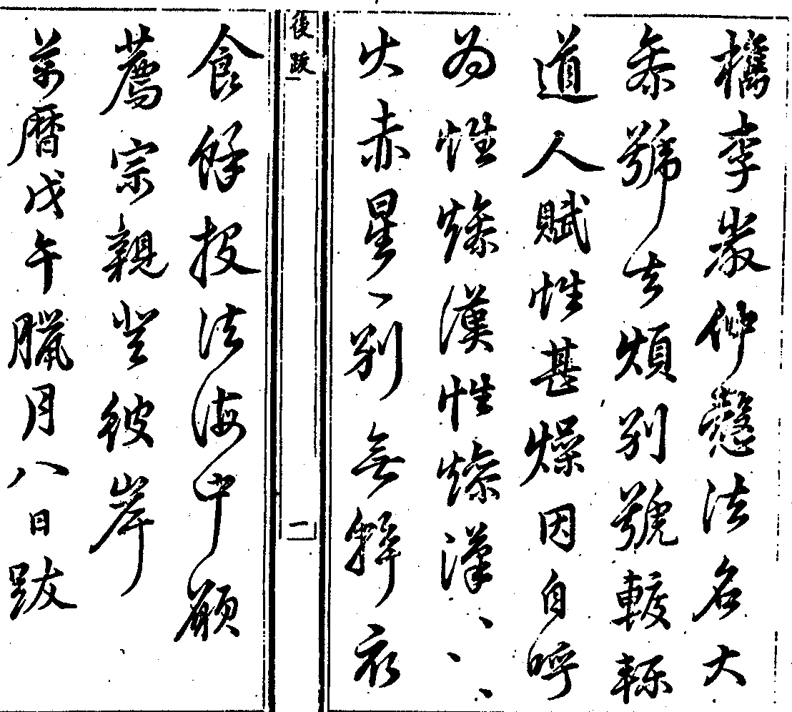

嘉興大藏經 第32冊
No.B273 千巖和尚語錄 (1卷)
【元 元長說 嗣詔錄】
第 1 卷
千巖禪師語錄序
往予家居時嘗謁千巖禪師於烏傷伏龍山當是時遐邇學子望風奔湊曾未幾何化荒墟為樓觀易寥空為金碧鐘鼓之聲上徹霄漢嗚呼何其能也蓋禪師之不能為能不用為用芳蘭生於深谷而馨香遠聞蒼璧韞于玄璞而光輝外發禪師處於遐壤而人競從之有道之士其果有異於庸常者歟且禪師在時其弟子嗣詔嘗錄其語鍥梓以傳予嘗獲觀之其敷宣大法如雲雷迭興而九龍噴雨也如大醫王制藥隨證而愈疾也如摩醯三眼光明洞照而無不至也由是知禪師之道不實不虛不有不無不中不邊在普應之門蓋亦鏗然有聲者也以能以用窺禪師者抑亦末矣禪師既入寂兵燹方張所謂語錄者皆為煨燼經今十有餘年矣一庵鄰上人自幼侍禪師與聞其道乃以舊本重刻不遠一千餘里來徵予序予謂禪師之道見於言讀其言自可知其道又何以序文為然稽之古德其語存于今者多名縉紳為題辭不若是固不足以表正宗之所寄第予也非人惡足為禪師之重輕以禪師與余交也因不辭而為之書雖然禪師之道不落有無中邊虛實者固不可以語言文字求也欲求禪師之道其亦得魚兔而忘蹄筌者乎禪師行業予嘗為撰塔上之銘茲不書上人方閱三藏諸經連年不自休今又孜孜而為是圖亦可謂不悖其師者也。
千巖和尚語錄
上堂轉山河國土歸自己則易轉自己歸山河國土則難拈了也父母未生前道將一句來。
雙林玉溪和尚至上堂天上無彌勒地下無彌勒千門萬戶開輪槌只一擊下座。
上堂還識老僧麼心地自閑閑萬般空擾擾門前流水忙屋上青山老若是箇中人道道。
上堂舉燒庵婆話頌曰供他死漢亦徒勞發我無明把火燒若是久經行陣者不妨一箭落雙鵰。
上堂教中道一切賢聖皆以無為法而有差別世尊有兩個舌頭無明只有一箇舌頭一切賢聖皆以無為法而無差別。
上堂洪波浩渺白浪滔天老僧沒頭浸命若懸絲汝諸人莫有相救者麼若有救得大家相聚喫莖虀救不得汝往西秦我之東魯。
上堂大火聚焰焰光裏許不容蚊蚋藏一燒燒盡三千界巍巍獨坐法中王大眾不是心不是佛不是物是甚麼。
上堂帝網之珠光光相羅啐啄之機聲聲相和閉門造車出門合轍為甚馬大師一喝百丈卻耳聾三日淆訛在甚麼處。
上堂趙州道箇無字雲門道普汝諸人悟不悟莫顢頇休莽鹵以拄杖卓一下下座。
上堂拈起須彌槌打破虛空鼓驚得鱉鼻蛇咬殺白水牯從教血濺梵天紅夜半日輪正當午靠拄杖云是法住法位世間相常住下座。
結夏上堂諸方今日結夏千巖今日結舌良久云是同是別以手摑口云又成多說下座。
示眾今朝初一上殿已畢喝囉怛那西方日出。
示眾即心即佛汝得吾皮非心非佛汝得吾肉不是心不是佛不是物汝得吾骨得髓聻三段不(同收歸上計)。
上堂今朝三月五山鳥自啼花自吐泥(團土塊鮮翻身為甚諸)人都不會良久云雪峰輥毬禾山打鼓。
示眾今朝又是六月十三日了也看看解夏又在目前未審諸人水牯牛還牧得熟也未蠟人如冰雪相似也未若也未▆各自照管莫怪老僧不說。
示眾我無佛法也無禪暮雨初晴四月天要會西來祖師意一池蛙鼓正闐闐。
示眾舉僧問仰山云法身還解說法也無山云我說不得別有一人說得僧云說底人在甚處山推出枕子溈山聞云寂子用劍刃上事師云溈山滿面埃塵仰山通身泥水有問無明法身還解說法也無劈脊便打說底人在甚處去去西天路迢迢十萬程。
示眾昨日兩軍出陣兩刃交鋒未見輸嬴難分勝負老僧只管看忍俊不禁未免借鄧隱峰底錫杖子出來搖一搖秪要諸人息戰息戰後如何熏風自南來殿閣生微涼。
示眾雲門大師道扇子[跳-兆+孛]跳上三十三天築著帝釋鼻孔東海鯉魚打一棒雨似盆傾雲門秪解瞻前不能顧後遂以扇子擊禪床云扇子[跳-兆+孛]跳入一十八重地獄築著閻羅王鼻孔閻羅王惡發道你喫了現成粥飯日夜鼓兩片皮妄談般若合喫我手中鐵棒被山僧一喝卻入扇子裏去也諸人還見麼若見拈取扇子來不見炎炎暑天用箇甚麼。
上堂月頭初一月尾三十釋迦老子拈弄不出是箇甚麼六月山深日正長道人行處不尋常團團圍繞青松樹殿閣無風也自涼。
上堂聞聲悟道見色明心觀音菩薩將錢買胡餅放下手卻是饅頭大小雲門只在聲色裏頭出頭沒無明則不然拈拄杖卓一下喝一喝下座。
示眾舉龍牙云天下名山到因腳辛苦年深與襪著如今老大不能行手裏把箇破木杓五祖演和尚云腳也不能著草鞋手也不能把木杓端坐受供養施主常安樂師云盡大地是一隻破艸鞋盡大地是箇破木杓要把便把要著便著佛祖何曾摸得著。
示眾說了也且道說箇甚麼便下座。
示眾舉睦州問一秀才云先輩蘊何事業秀才云會二十四家書州以拄杖點云會麼才云不會州云永字八法也不識說甚麼會二十四家書師云智過於師方堪傳授睦州手忙腳亂俗氣不除秀才只解順朱休論八法諸人還知這一點落處麼不可以智知不可以識識萬論千經從此出。
示眾大眾現成公案昨日初一今朝初二。
上堂大眾又是九月半也生死事大無常迅速討甚閑工夫說長腳話看看閻羅老子請老僧齋也諸人各自照管缽盂匙箸好喝一喝下座。
上堂大眾佛之一字吾不喜聞況說出許多閑言長語教壞人家男女好與三十棒何故蚊虫遭扇打只為口傷人久立。
示眾舉僧問趙州大地無塵掃箇甚麼州云掃外來底若是無明只向他道掃裏頭底大眾趙州底是無明底是。
示眾舉雪竇云三分光陰二早過靈臺一點不揩磨貪生逐日區區去喚不迴頭爭奈何師云三分光陰即不問且道靈臺一點是揩磨耶不揩磨耶眾無語師云歸堂喫茶。
示眾舉罽賓國王斬師子尊者頭王臂自落雪竇云作家君王天然有在黃龍新云黃龍要問雪竇既是作家君王因甚臂落大慧云孟八郎漢又恁麼去師云一人無卻臂一人無了頭二俱誇好手何處不風流。
示眾今朝正是三月三釋迦老子露尊顏樹上桃花開爛熳階前紅雨點班斑下座。
示眾良久云大眾會麼會則事同一家不會則萬別千差臨濟和尚道我在黃蘗處喫六十痛棒如蒿枝拂相似如今思量一頓喫不知誰為下手時有僧出云某甲下手臨濟度杖與之僧擬接濟便打看它的的顯示這些子無你諸人近傍處豈常情之所能測老僧尋常痛罵罵你痛棒打你你不作無明會便作佛法會又何曾夢見我先祖門風所以古人云臨濟之道將墜于地痛哉痛哉正與麼時合作麼生超群須是英靈漢敵勝還他師子兒。
示眾舉德山托缽因緣拈云末後句子德山巖頭雪峰總跳不出乃喝一喝云大丈夫當為真王何以假為。
示眾當臺明鏡鑑在何人露刃吹毛逢它敵者從上的的相承以來無有不同者心肝五臟也仝眉毛鼻孔也仝眼睛舌頭也同三百六十骨節也同八萬四千毫竅也同一處同處處同只有些子不同諸人還檢點得出麼阿呵呵縱饒滄海變終不與君通。
示眾大眾還知老僧落處麼如釣魚放生。
端午上堂夏日喫麥粥頭頂茅草屋東司雨淋淋無處可下足中有老頭陀豈可稱尊宿可憐諸禪和剛要相攢簇雖然無受用且喜相和睦健者共成褫病者奉水菽今朝端午節無酒又無肉擎出一杯茶滿泛菖蒲玉且道成得甚麼事人情若好喫水也甜。
示眾老僧如胡孫種樹種了便拔看大眾生根也未眾無語師代云根生也。
示眾舉魯祖面壁南泉背上撫一掌公案師云南泉何必稱兩字名當時更與兩掌非惟坐斷魯祖舌頭且教後代兒孫免得做摸打樣。
示眾舉臨濟如蒿枝拂相似公案雪竇云臨濟放處大危收來太速松源拈拄杖云臨濟據令而行不知孤負黃檗雪竇盡力擔荷也只見得一邊且道薦福節文在甚麼處擲下拄杖師云二尊宿一人聾雙耳朵一人瞎隻眼睛不惟孤負臨濟亦乃喪我兒孫無明今日路見不平且要與渠雪屈良久云不得動著動著打折你驢腰。
持法衣上堂陳年布裰破毸毸新製金襴天上來褁得虛空無少賸山河朵朵笑顏開。
示眾舉五祖演和尚云四五百碩麥二三千碩稻好箇休糧方耆婆不得妙師云管取有錢常住不無演祖若是將無作有拔貧作富須還無明始得米不蓄一粒菜不栽一莖任渠來往者喫得飽彭亨。
示眾老僧今日口啞不能與諸人說得。
示眾舉盤山云心月孤圓光吞萬象光非照境境亦非存光境俱亡復是何物洞山云光境未亡復是何物師云光境不亡復是何物。
示眾大眾柱杖不在且作別時來。
雙林友雲和尚至上堂云路逢道伴交肩過一生參學事畢且道以何為驗拈柱杖卓一下云空手把鋤頭。
上堂以拂子打圓相云從上以來只傳者一箇冬瓜印子印破汝等諸人面門印空印水印泥一一無差高低普印麻三斤乾屎橛新婦騎驢阿家牽蝦蟆[跳-兆+孛]跳上天蚯蚓驀過東海印到彌勒下生也無箇了日畢竟如何喝一喝下座。
義烏縣尹周剛善至上堂拈柱杖云大眾見麼韓文公來也卓一卓云先以定動後以智拔便下座。
龜峰道源和尚至上堂作家相見不在形言擊鼓升堂聊陳供養供養我龜峰和尚降尊就卑昔應庵敘謝大慧末句云虛空可量風可繫無能盡說佛功德即今下座同大眾拜請和尚尊慈開示。
示眾舉世尊謂迦葉曰吾有正法眼藏分付與汝頌曰世尊拈華迦葉微笑賣與買人不要不要。
示眾舉梵志詩云梵志身死去魂魄見閻老讀盡百王書不免被捶拷風穴云一稱南無佛皆已成佛道師云只是現成話風穴用恰好。
示眾云佛祖巴鼻衲僧巴鼻討甚巴鼻咄一一向胸襟中流出將來蓋天蓋地。
示眾舉仰山道悟即不無爭奈落在第二頭米胡深肯之師云如鏡鑑像像不來時鏡將何鑑如冰融水水歸源後冰復何融只如仰山米胡二老宿與麼道還有為人處也無若把半斤稱八兩依然錯認定盤星喝一喝。
示眾舉仰山四藤條公案頌云集雲峰下四藤條虎驟龍奔海岳搖選佛若無如是眼如何留得到今朝。
示眾大眾無明這裏只使無明且無佛法與你一棒大煞慈悲與你一喝十分直截你若作棒喝商量便千里萬里也久立。
示眾舉法華舉和尚云釋迦不出世達磨不西來佛法遍天下談玄口不開無明則不然釋迦太饒舌達磨太孤絕諸方明眼人敢保猶未徹。
示眾舉傅大士云夜夜抱佛眠朝朝還共起起坐鎮相隨語默同居止分毫不相離如形影相似欲識佛去處只這語聲是玄沙云大小傅大士只認得箇昭昭靈靈洞山聰云且道衲僧家日裏還曾睡也無保寧勇頌云要眠時即眠要起時即起水洗面皮光啜茶濕卻觜大海紅塵生平地波濤起呵呵阿呵呵哩哩哩囉哩師云三尊宿大似徐六擔板傅大士又俗氣未除若論向上宗乘總欠悟在且道無明具甚麼眼目不見道直須揮劍若不揮劍漁父棲巢。
示眾舉伏牛在禪師為馬祖馳書上忠國師國師問馬祖師如何示徒云即心是佛國云是甚麼語話又問更有甚言句云非心非佛或云不是心不是佛不是物國云猶較些子伏牛卻問未審和尚此間如何示徒國云三點如流水曲似刈禾鎌師云伏牛當時見國師恁麼道只向道是甚麼語話不惟坐斷國師舌頭且與馬大師出得一口氣。
示眾舉保寧勇和尚云一是一二是二三是三四是四數目甚分明上下依資次依資次有何事以拄杖劃一劃云大眾一時亂卻六十甲子了也無明則不然一是二二是三三是四不作方便亦無漸次且作麼生是威音王以前底事拈拄杖卓一卓云又是從頭起。
示眾云真空絕朕猶有真空大道無名猶名大道所以靈龜曳尾拂跡跡生釋迦彌勒尚滯半途文殊普賢皆須喫棒汝諸人與麼參請無明與麼提唱還有過也無良久云盡力跳不出。
示眾云不道無只是少所以達磨面壁於少林釋迦掩室於摩竭也雖然如是要見德山臨濟則未可在何故棒打石人頭嚗嚗論實事。
示眾黃葉任隨流水去白雲從便入山來寥寥巖畔三間屋兩片柴門竟日開。
示眾云貴糴廬陵米大做鐵酸餡普請諸禪流堂中自吞啗阿呵呵聊表殷勤莫嫌冷淡。
示眾狂心不息雖天上亦不稱意便成佛亦是虛頭狂心一息便是佛也不要做更說甚麼天堂地獄汝諸人還息麼。
示眾舉石門聰和尚云十五日已前諸佛生十五日已後諸佛滅十五日已前你不得離我這裏我有鉤鉤你十五日已後你不得住我這裏我有錐錐你且道正當十五日用鉤即是用錐即是遂有頌云正當十五日鉤錐一時息更擬問如何回頭日又出大慧和尚云恢張三玄三要扶豎臨濟正宗須是恁麼人始得雖然如是雲門則不然十五日已前諸佛本不曾生十五日已後諸佛本不曾滅十五日已前你若離我這裏我也不用鉤鉤你一任橫擔拄杖緊峭草鞋十五日已後你若住我這裏我也不用錐錐你一任拗折拄杖高挂缽囊且道正當十五日合作麼生乃云十五日前後鉤錐徒爾為今朝是十五正好用鉤錐且作麼生用路逢死蛇莫打殺無底籃子盛將歸師云二大老把手上高山爭奈傍觀者哂且道無明有甚長處十五日已前諸佛生以不生生為生十五日已後諸佛滅以不滅滅為滅十五日已前你若住我這裡我卻用錐錐你直須屍橫萬里血濺梵天十五日已後你若離我這裏我卻用鉤鉤你直須眉毛廝結鼻孔相拄所以道十五日前後鉤錐常在手正當十五日大家要知有一任面南看北斗艸木叢林師子吼。
示眾云今朝臘月二十五雲門一曲曾無譜爭似無明調轉高等閑唱出千山舞大地為琴虛空為鼓拍拍相隨聲聲相助汝諸人須聽取白雪陽春何足數箇中端的孰知音寥寥永夜松風度。
示眾云是法非思量分別之所能解釋迦老子云我於三七日思惟如是事喚作不思量得麼達磨大師云汝得吾髓喚作不分別得麼咦相逢盡道休官去林下何曾見一人。
示眾舉琅琊覺云有句無句如藤倚樹樹倒藤枯好一堆爛柴大慧云作賊人心虛雖然如是恩大難酬師云一人作佛法商量一人作世諦流布檢點將來總欠悟在無明見處也要諸人共知有句無句如藤倚樹樹倒藤枯響。
示眾舉五祖演舉雲門云古佛與露柱相交是第幾機自云南山起雲北山下雨演云大小雲門元來小膽四面則不然古佛與露柱相交是第四機師云無明敢道大小四面更是小膽不然何故道面皮厚三寸出語成不遜好將臨濟棒一日打三頓有問古佛與露柱相交是第幾機第一機我為法王於法自在。
示眾舉道吾禪師云高不在絕頂富不在福嚴樂不在天堂苦不在地獄相識滿天下知心能幾人大慧拈云徑山則不然高在絕頂富在福嚴樂在天堂苦在地獄誰知席帽下元是昔愁人師云絕頂高高未是高天堂地獄亦徒勞若論生死輪迴事今日明朝與昨宵。
示眾簷頭雨滴滴屋頭山寂寂西來祖師意大地人誰識正當與麼時不費纖毫力分付與東風隨處生顏色。
示眾舉香嚴端禪師云語是謗默是誑語默向上有事在老僧口門窄不能為汝說松源岳云香嚴與麼道是說不說良久云喫茶去師云香嚴是謗松源是誑語默向上有甚麼事無明口如巨海徹底波瀾。
上堂插茅建梵剎猶是時人功幹十方無壁落四面亦無門這裏(道得)倜儻分明許你蓋天蓋地不然歸堂參取露柱擊拂子下座。
示眾舉文殊普賢起佛見法見世尊威神貶向二鐵圍山師拈云大眾不起佛見法見還免得貶向鐵圍山麼世尊也是憐兒不覺醜。
冬至上堂六陰已極一陽生佛道還同世道亨唯有祖師門下客依前日午打三更。
初祖忌示眾九年面壁坐斷天下人舌頭隻履西歸喪卻自家窮性命吾本來茲土又喪不盡也傳法救迷情又坐不斷也既坐不斷喪不盡畢竟作麼生一花開五葉結果自然成。
示眾江月照松風吹面面青山展笑眉經有經師論有論師莫怪老僧無法說勞汝諸人立片時。
示眾云一切世界中有以音聲為佛事有以光明為佛事有以飲食為佛事有以莊嚴為佛事是人行邪道不能見如來如來者無所從來亦無所去諸仁者且道如來即今在甚麼處。
示眾蓬頭垢面箇頭陀天下禪和不奈何便是佛來須喫棒如今年老卻成魔喝一喝。
示眾大眾一喝分賓主照用一時行要會箇中意日午打三更諸禪德臨濟大師四稜塌地了也乃喝一喝且道那箇是賓那箇是主那箇是照那箇是用又喝只這是賓只這是主只這是照只這是用又喝且不是賓且不是主且不是照且不是用是箇甚麼又喝云進前求解會特地斬精靈。
示眾龍門水急一句截流茅屋風高千山起浪三世諸佛望風結舌六代祖師斫額有分天下老和尚仰羡仰羡是汝諸人既到這裏作麼生與無明相見驀拈拄杖云與麼與麼人境俱奪不與麼不與麼照用同時卓一下云龍生金鳳子衝破碧琉璃喝一喝。
杭州天龍禪寺新建僧堂請上堂聖人在上天下太平我為法王於法自在眾中莫有金毛師子麼試出來哮吼看僧問從上諸聖所傳何事師云本來無一物赫赫動乾坤進云昔日世尊周遊諸國今日和尚獨踞峰頭還有為人處也無師云有進云如何是和尚為人處師云老鼠喫貓飯進云學人不會師云碗子樸落地打破常住塼進云天龍新建僧堂施主入山設齋請和尚就彼開堂和尚還去麼師云你試定當看進云與麼則和尚性命落在學人手裏師云海東果子樹頭心僧禮拜師云又道老僧性命在你手裏豎拂子召大眾云本來無一物赫赫動乾坤擬議不來時迢迢十萬里無明這裏只有一口劍劍下有分身之意亦有出身之路你若向活鱍鱍處著到我便教你性命不存你若在淨裸裸處坐地我便教你雲生腳下直須人境俱奪殺活同時自然海晏河清日上月下何故宏開選佛場心空便作狀元郎傳來只箇無文印桂子香中舉手忙乃喝云文生也汝諸人是拖白是末名是頭名良久云龍生金鳳子衝破碧琉璃。
復云茲承天龍禪寺無用貴首座偕生首座入山設齋俵襯持大道平長老香請曰今春蒙松江蔡媽媽李氏淨心施財建新僧堂完備請和尚向彼中開堂說法與淨心相見師曰諾於是撾鼓陞堂集眾而告之曰無明以十方世界作一箇僧堂行與諸人同行坐與諸人仝坐乃至語默動靜折旋俯仰未嘗與諸人有絲毫問隔所以雪峰云僧堂前與汝相見了也汝若頂門具眼便見無明與淨心在僧堂前相見汝若更道在天龍僧堂前相見在伏龍僧堂前相見我也知你是箇瞎漢不惜眉毛復示一頌處世界無所著圓阤阤光爍爍大中大窄中窄李氏淨心雖女流宛有丈夫之作略針鋒上拄須彌盧微塵中現寶王剎天龍道用不盡添得伏龍背地哂赤肉團上壁立千仞阿呵呵哩哩囉東家作牛西家作馬衲僧鼻孔一時穿眼光爍破四天下復召大眾云是甚麼。
示眾舉白雲端和尚云古人留下一言半句未透時鐵壁相似一日覷透方知自己便作鐵壁如今作麼生鐵壁鐵壁師喝一喝云用鐵壁作麼。
示眾舉舍利弗問須菩提夢中說六波羅蜜與覺時同別須菩提云此義幽深吾不能說此會有彌勒大士汝往彼問師別須菩提云寐語作麼。
因高麗自悟禪人請祖衣上堂捧衣云大眾零零落落有些些覿面相呈見也麼不是春山雲片片分明秋雨後蕉芭箇是高峰老師翁天目山頭一生受用不盡底虎跑寶舟貴首座以我在杭州居山囑與奉持已三十年矣今日伏龍山中二三百兄弟莫有擔荷得底麼有則師子一滴乳無則且聽悟禪人請歸高麗金剛山供養令合國人知待彌勒下生不妨兩手分付所以道衣以表信可力爭耶阿難問迦葉云師兄世尊傳金襴外別傳何物迦葉召阿難阿難應諾迦葉云倒卻門前剎竿著我道迦葉要做阿難師兄未得在何也待他道世尊傳金襴外別傳何物但召一聲待他開口劈脊便打不惟扶豎得祖上門風亦且與天下衲子作個榜樣。
示眾舉調達謗佛生身陷地獄佛令阿難傳旨汝在獄中安否達云我雖在獄中如受四禪天樂又令阿難問汝還求出否達云我待世尊來便出阿難云世尊是三界大師豈有入地獄分達云我豈有出地獄分師云臨危不悚真大丈夫。
示眾舉盤山云似地擎山不知山之孤峻如石含玉不知玉之無瑕若能如是是真出家大慧云若能如是捏目生花師云若能如是不名出家。
示眾舉僧問趙州承聞和尚親見南泉是否州云鎮州出大蘿蔔頭又僧問萬法歸一一歸何處云我在青州做一領布衫重七斤舜老夫云鎮州蘿蔔大青州布衫重要會箇中意雞向五更啼師云久響雲居元來只隨人腳跟轉若是無明但云鎮州蘿蔔大青州布衫重要會箇中意虛空剜窟寵。
示眾舉盤山云向上一路千聖不傳慈明云向上一路千聖不然大慧云向上一路熱碗鳴聲師云向上一路在你腳底。
曹居士請升座婺州信士曹仁卿同合宅貴眷就寺設齋俵嚫請老僧升座說法老僧曰諾會麼盡大地是箇老僧盡大地是箇法座更教老僧升甚麼座說甚麼法記得五六年前行橋時已曾到宅叨齋受嚫今日山中三四百眾喫齋受嚫人人歡歡喜喜只者歡歡喜喜增仁卿多少福田長仁卿多少壽量適來長老已為仁卿向法座上舉揚老僧只喫齋受嚫便了不用為蛇畫足自然水到渠成豈不見五祖演和尚云端坐受供養施主常安樂趙州云老僧在者裡坐地更說什麼佛法無明有條攀條無條攀例忽有箇漢出來道和尚你坐地分贓他日作箇什麼填還施主去只向道不作牛兮定作驢因甚如此大丈夫異類中行不是差事。
示眾汝諸人只是不肯信自己是佛所以向外馳求無箇放身命處如今聽我說法時中禮佛看經坐禪持戒作福便是向外馳求也何況貪名逐利淫聲愛色而不喚作向外馳求耶要得不向外馳求便請迴光一照和自己也無自己既無便無我無你無佛無眾生無禪無戒無罪無福無名利無聲色無生無死空勞勞地無一物為障為礙然後隨緣應用任運過時天上人間無不自在臨濟云汝但歇得念念馳求心便與釋迦老子不別不是誑汝汝須信得及始是祖師西來也只做得箇指路底人汝諸人只是行路底若要火急到家不勞動步若也茫茫這般走轉走轉遠何故賺卻路頭不見道十方薄伽梵一路涅槃門且道路頭在什麼處以柱杖劃一劃云在這裡多少直截。
因蔣居士施缽盂上堂僧問大庾嶺頭一箇缽盂明上座為甚提不起師云用力太多進云今日蔣居士施缽盂五百付為甚人人提將去師云不費纖毫力進云用力底是不用力底是師云分身兩處看僧擬再進語師云問話且止況此事不在語言文字上何謂也盡十方世界是箇缽盂三世諸佛在裏許轉大法輪歷代祖師天下老和尚乃至一切有情無情總在裏許頭出頭沒汝等禪和家還跳得出麼若跳得出須彌南畔把手同行若跳不出長連床上喫粥喫飯茲承常州直心居士同令弟月堂居士委宏都寺送缽盂五百副齋米五十石及嚫資種種供養登山俵散眾請升於此座舉唱(宗乘以荅居士大心且居士大心作如何荅宗乘又如何舉唱若舉麻三斤乾屎橛鋸解秤鎚之類雖是本分家風於諸人分)上了無交涉免舉一兩則古話也要諸人咬嚼僧問楊岐天得一清地得一寧衲僧得一堪作什麼岐云缽盂口向天有問無明只向道披毛戴角又僧問洞山時時勤拂拭勿使惹塵埃為甚不得衣缽山云直饒道本來無一物也不合得他衣缽雪竇云他既不受是眼將來底必應是瞎還見祖師衣缽麼若於此入門便乃兩手分付非唯大庾嶺頭一人提不起設使合國人來且緩緩將去師云洞山太尊貴生雪竇太慳吝生無明這裏則不然將來底是眼不受底是瞎禪和家箇箇腕頭有力不怕提不起不怕將不去何處更覓祖師即今兩手分付大眾無明與麼批判且道與古人相去多少還有證明者麼若證明得居士功不浪施若證明不得無明不惜眉毛復成一頌以拂子打圓相云大眾見麼大地渾侖黑漆缽吞吐虛空口門闊白飯山堆疊疊來死人吃了都教活畢竟此功歸阿誰常州在家蔣菩薩老僧也只得一分大家有眼何曾瞎分付囊藏又展開千古萬古阿剌剌。
示眾舉祖師云父母非我親誰是最親者諸佛非我道誰是最道者雲蓋本云父母非我親無有不親者諸佛非我道無有不道者祖師得第一句雲蓋得第二句有人添得一句許伊鼎分三足無明則不然父母非我親我亦非親者諸佛非我道道亦非我者祖師也不得第一句雲蓋也不得第二句無明碎身如微塵何止頭破作七分。
上堂僧問如何是第一句師云有口如啞進云如何是第二句師云有眼如盲進云如何是第三句師云棒折也未放你在師乃擲下拂子云此是老僧第二句如何是第一句便下座。
示眾舉僧問投子不斷煩惱而入涅槃時如何子作色云這箇師僧如發業殺人師別云夜夜一覺眠朝朝三頓飽。
上堂僧問如何是祖師西來意師云野馬入牛闌進云達磨未來時如何師云在西天進云來後如何師云在東土問如何是佛師云今日好雨進云如何是道師云此去義烏不遠師乃云一塵起大地收卓拄杖釋迦老子在汝諸人腳底達磨大師穿過諸人鼻孔還知麼若知蝦蟆口裏道將一句來若不知老僧今日失利。
謝首座上堂舉五祖演和尚云槌碎蟠桃核得見其仁捋斷驪龍鬚得遇其寶雖然如是未是好手爭如我伏龍山中天章首座也不槌碎蟠桃核頭頭應用皆仁也不捋斷驪龍鬚處處全彰其寶呼釋迦彌勒為灶下之奴拈丈六金身作一莖之艸吹毛一拂血濺梵天珊瑚樹林紅日杲杲雖然如是也只得一半下座。
示眾僧問如何是賓中賓師云當胸叉手問他人進云如何是賓中主師云堂上坐來日正午進云如何是主中賓師云有時歡喜有時嗔進云如何是主中主師云橫按莫邪無佛祖師乃云無明不會禪問著口便啞嗔者從他嗔罵者從他罵好事不出門惡事傳天下咄。
東陽陳君采至示眾舉白雲端因郭功父到云夜來作得箇山偈說向大眾請舉似諸方非唯謝功父大儒且要天下有鼻孔衲僧脫卻貼肉汗衫乃云上大人丘乙己化三千七十士尒小生八九子佳作仁可知禮也師云白雲固是作家爐鞴功父亦是煆了精金檢點將來也好與三十棒何故一箇不合將常住物作私己人情一箇攻乎異端斯害也已要脫他天下衲僧貼肉汗衫倒添了百二十斤黃金鎖甲如何有箇洒洒落落時節無明茅庵之下君采大儒訪及我也不統夜思量作箇山偈我也不擊鼓敘謝廣演條章只有一味杜田禪自然兩眼對兩眼如何是杜田禪喝一喝云朕聞上古其風朴略一日新到三人來參師云三人同行必有一智智不到處道將一句來僧無語師云智不在言第二箇如何又無語師云第三箇漆桶道看又無語師云卻是老僧罪過且坐喫茶。
示眾僧問如何是大安樂底人師云劍樹刀山中坐鑊湯爐炭裏安身進云行何方便到此田地師云一物亦不為進云古人一曲如何唱師云五音六律和不得進云伏龍一曲又何如師云萬像森羅齊拍手進云一種沒絃琴唯師彈得妙乃作舞而去師乃云世尊拈花眼裏撒沙迦葉微笑全身落艸達磨面壁皇天苦屈二祖安心老鼠居金德山行棒莽莽蕩蕩臨濟下喝喫鹽止渴溈山水牯泥裏洗土仰山插鍬性命難逃俱胝豎指是何道理雪峰輥毬老不知羞石鞏張弓誑謼盲聾趙州勘婆大有淆訛玄沙未徹話作兩橛這一隊不唧溜老凍膿生前鹵莽死後瞞頇罪犯彌天髑髏遍野無明忍俊不禁與渠一坑埋卻拈拄杖卓一下云直得十方世界風凜凜地法堂前何止草深一丈汝諸人且道向甚麼處出氣良久云擬心湊泊二鐵圍山放之自然七穿八穴卓一下因甯府施法被上堂春雲乍卷春雨初晴花紅柳綠水碧山青紫燕黃鸝深談實相叢林草木盡作琴聲突出釋迦鼻孔豁開達磨眼睛只如今日齊郡夫人張氏德真所施一片法被上有一卷心經喚作一卷心經又是一片法被喚作一片法被又是一卷心經金燄燄錦層層結角羅紋重重寶印縱橫十字朵朵珠瓔莊嚴既妙德相彌增一一從夫人心中流出一一於諸佛分上圓明老僧受了諸人無分諸人受了老僧無分不如打歸常住千年萬歲耀真燈耀真燈復何憑有時挂向華王座也勝諸方黑漆屏。
上堂青天白日起一片烏雲轟一箇霹靂下一陣大雨平地水高三尺五尺有者道龍王變化有者道陰陽氣合有者道人物業感有者道法爾如然有者道總不與麼是皆測度如來境界如取螢火燒須彌山畢竟如何烹佛煉祖大鉗鎚要與楊岐作頭底喝一喝下座。
上堂僧問如何是奪人不奪境師云日照山河影動搖進云如何是奪境不奪人師云背水陣圓增勇健進云如何是人境俱奪師云任是鋒刀常坦坦假饒毒藥也閑閑進云如何是人境俱不奪師云野老不知堯舜力鼕鼕打鼓祭江神僧禮拜師乃云有麝自然香何用當風立。
上堂僧問如何是露地白牛師云草裏臥進云甚麼人騎得師云無髭鬚胡子進云三身中那一身說法師云賣油婆子水梳頭進云德山棒臨濟喝意旨如何師云惡人先做大進云如何是和尚家風師云無力豎拳頭乃拈拄杖云舉不顧即差互卓一下擬思量何劫悟下座。
上堂舉僧問首山一毫未發時如何山云路逢穿耳客發後如何山云不用更遲疑師云無明則不然有問一毫未發時如何云不逢穿耳客發後如何云多遇刻舟人。
因僧來參乃問甚處人僧云浙西師云此間無飯喫來作什麼僧云來求和尚佛法師喚僧近前僧近前師打一拳云會麼僧云不會師云呆子拳頭也不識因眾看經次師舉起經云這是甚麼經眾無對師代云序品第一良久云會麼向下文長。
上堂僧問達磨面壁意旨如何師云有口開不得進云人天交接不得相見如何是相見底事師云煙熏黑漆桶進云浩浩塵中如何辨主師舉拳示之進云辨後如何問云你主在甚處僧禮拜師乃云秋風涼秋夜長未歸客思故鄉大眾如何是你故鄉曷幸然家裡坐不用苦思量。
上堂九月九家家盡飲茱萸酒堪笑山居道者家兩枚豆粽塞卻口大寒酸無可有八角磨盤空裡走卻有些兒勝俗人日日面南看北斗。
上堂舉楊岐云天得一以清地得一以寧君王得一以治天下衲僧得一堪作甚麼良久云缽盂口向天師云大小楊岐熟處難忘衲僧得一且作麼生以拄杖卓一下喝一喝下座。
示眾不是心不是佛不是物是何物拈拄杖云崑崙扶起瞎波斯一槌擊碎黃金骨卓一下。
上堂鼓聲纔動大眾雲臻法座高登主賓互換箇箇頂天立地人人鼻孔遼天不問如何若何自然現成受用不見道百味珍羞無過一飽下座。
師因俗官見貓兒問云貓兒喫肉否師云不喫肉只喫老鼠官云善知識如何容得他師云教官人莫來不得。
上堂僧問釋迦彌勒猶是他奴未審他是阿誰師云糞掃堆頭生苕帚進云學人不會師云問取淨頭進云大悲千手眼那箇是正眼師云點進云如何是最初一句師云如是我聞進云此是第二句師云信受奉行僧禮拜師乃云諸佛諸祖只是你諸人自己若信得及無明縱有百千大棒也打不著有百千舌頭也讚歎不及何故不見道第一句中薦得堪與佛祖為師如或未然十二時中也須回光返照看不是心不是佛不是物是甚麼狗子還有佛性也無無是甚麼如何是佛麻三斤是甚麼。
上堂僧問如何是南宗北宗師云東瓜直儱侗瓠子曲彎彎進云學人不會師云喫了東瓜喫瓠子進云如何是第一句師云老僧道不得進云和尚為甚道不得師云道得是第二句僧禮拜師乃云是法住法位世間相常住山是山水是水僧是僧俗是俗盡乾坤大地無絲毫過患德山臨濟門下又且不然畢竟如何剛然愛結死冤家擉瞎頂門三隻眼。
示眾眨上眉毛蹉過伊大開兩眼復名誰滿天滿地無人識百草頭邊活祖師。
示眾吾本來茲土傳法救迷情著甚死急直饒二祖得髓兒孫遍天下還免得隻履西歸也無所以無明也不把你諸人為事諸人也不把無明為事思量總是空篩氣何不留將暖肚皮。
示眾舉益州通禪師問夾山云目前無法意在目前不是目前法非耳目之所到豈不是和尚語山云是通乃掀到禪床叉手而立夾山打一棒師云山打一棒是目前法不是目前法掀到禪床是會夾山意不會夾山意諸禪德道道道得許你入阿字法門。
示眾舉巖頭渡婆子拋兒子公案師云這婆子自底性命要且捨不得巖頭不合激發他殺了一箇兒子據令而行各與七十棒諸禪德若謂不公卻請斷看。
示眾今朝十五槌鐘打鼓咄哉老僧泥裏洗土。
上堂主人翁錯惺惺著錯他時後日不受人謾錯且道瑞巖錯千巖錯錯錯。
客至上堂披衣登法座道者是高僧將謂多奇特元來百不能西風吹細雨落葉滿空庭有客來相訪青山自送迎。
浴佛上堂摩耶今日產嬰孩剛道天宮降下來不是雞窠生鳳卵分明象子出驢胎無明果向空中結三毒華從火裡開堪嘆禍根深不拔叢林一歲一番災御香至上堂御香來自九重天一縷煙雲遍大千林下野人何以報祝延聖壽萬斯年。
檀越樓清翁一得建山門塑金剛開光明示眾以筆點一點云這一箇莫道不曾相識好又點一點云這一箇卻即是樓一得外護山門內承佛記金剛正體洞徹十虛大用現前威而不猛有為界中不壞無為之相無為界上不宰有為之功爾能借我神通我亦助君精彩所以道眼眼相覷面面相對灼然不在筆尖頭自有光明動天地。
檀越樓文翁造殿又塑佛開光明示眾云德山拆卻殿丹霞燒卻佛樓文翁造殿又塑佛且道拆殿燒佛底是起殿塑佛底是以筆點云這裏見得靈山一會儼然未散若也不見是真精進是名真法供養如來若要分明更下注腳作福者作福造罪者造罪張公喫酒李公醉總不干無明一星子事乃呵呵大笑。
日本祖能首座請衣上堂舉石門聰和尚云西天二十八祖盡得傳衣付法唐土六祖之後得道者多只傳其法不傳其衣無明則不然衣以表法故謂之法衣人能宏道故謂之法身無處不遍無處不明故謂之法眼高峰老祖法衣一頂今春對眾請與高麗國金剛山供養去也幻住先師法衣一頂我得來三十年矣如今大拙首座又要請歸供養雖然如是從上諸祖各各有三十棒分無明亦有三十棒分眾中莫有下得這般毒手者麼有則出來下手看如無他時後日不得向背地裏苦叫屈擊拂子下座。
小參
杭州天龍禪寺慶讚佛閣僧堂小參拈拂子云大眾我有一問在你諸人處你諸人莫有將我問來問我者麼僧問如何是和尚問處師云問處也不知進云古人道問在答處答在問處此意如何師云三十棒付在來日進云天龍長老為淨心鑒義入山設齋俵嚫未審有何福報師云三尺一丈六僧禮拜師云因我得禮你師乃豎拂子云森羅及萬像一法之所印是大神咒是大明咒是無上咒是無等等咒三世諸佛說也說不到歷代祖師傳也傳不來唯是上上根器頂[寧*頁]上豁開正眼腳跟下一覷覷透盡十方世界無有一人不是自己無有一物不在自己光明裏如千日並照罄無側影若是尋光美影展轉沒交涉直饒萬里不掛片雲青天也須喫棒教中道若以色見我以音聲求我是人行邪道不能見如來復豎拂子云大眾見麼要且不是色喝一喝云聞麼要且不是聲既不是聲又不是色既不是見又不是聞喚甚麼作邪道又喚甚麼作如來泥團土塊眼睛開如如狗子何曾佛性無雖然道箇如如早是變了也且道變作甚麼以拂子劃一劃云上劃不長下劃不短。
杭州無用貴長老與無明云松江淨心比丘尼為天龍起蓋佛閣僧堂明樓法堂東淨西菴種種緣事今夏畢工另備物料到山設齋俵嚫請和尚升座舉揚正法眼藏涅槃玅心追嚴幻居士蔡公及孟賓學錄同登寶所兼報四恩三有普令法界之內血氣之屬知有我宗門中超生越死一段奇特大事所謂奇特大事者不是你小智小德凡愚小可之事何故見底大便知底大知底大便說底大說底大便做底大做底大便成底大成底大無有不大者人中則為大人賢中則為大賢聖中則為大聖如天普蓋如地普擎如虛空普包虛空普包萬物而無能包之心此事能包虛空亦無能包之相所以道空生大覺中如海一漚發只要你諸人直下信得及覷得透便與釋迦老子不別元來自己分上有這一段奇特大事可以超生越死可以超凡越聖可以超佛越祖臨濟云你一念清淨光是你屋裏法身佛巖頭云一一從自己胸襟中流出蓋天蓋地去幻住和尚云父母未生前那箇是本來面目你若見得本來面目自然生本不生死本不死常于日用中轉不可測底機輪自然活轆轆地雖在聲色中不為聲色所惑雖處萬法中不為萬法所移雖居三界中洞明三界二十五有善惡果報苦樂業緣而無纖毫執著亦無纖毫所礙不彈指便入毘盧大莊嚴樓閣之中現不可說重重樓閣一一樓閣中現不可說重重境界一一境界中現不可說重重莊嚴須彌盧為之床座香水海為之屎坑一一屎坑中蛆虫皆現大人之相一一床座中有大善知識叱文殊為奴以普賢為婢行棒行喝接上上大機至於種種說法種種利生無一塵不是道場無一法不是佛事交光相羅如帝珠網互相攝入互相顯現一一出生重重無盡有般瞎漢便道此是表顯之說和尚莫錯又有般道金屑雖貴落眼成翳癡人不可與你說夢你這裏信得及皆吾心之常分初不假於他術苟有纖毫信之不及及之不盡便為滲漏便成滯礙如何能拈一莖草作丈六金身插一莖草而建梵剎向一莖草上現瓊樓玉殿耶白雲端和尚云若端的得一回汗出便向一莖草上現出瓊樓玉殿若未端的得一回汗出縱有瓊樓玉殿卻被一莖草蓋卻作麼生得一回汗出去自有一雙窮相手不曾容易舞三臺後來大慧和尚拈云一莖草上現瓊樓玉殿決定可信瓊樓玉殿被一莖草蓋卻莫被他熱瞞徑山與麼道與已得一回汗出者說若未得一回汗出不得疑著夫謂善知識者是大因緣解粘去縛蓋是尋常奪食驅耕還它敏手白雲張千鈞之弩豈為鼷鼠發機大慧垂四海之鉤只要獰龍上釣且道無明者裏作麼生既有一雙窮相手不妨容易舞三臺久立珍重。
東陽法界寺小參世尊乞食入於王城千巖下山游於此地眾中莫有共相證據者麼(問答不錄)拈拄杖云大眾見麼喝一喝云大眾聞麼聞聲悟道見色明心汝諸人總見總聞作麼生是你明底心悟底道若識得無明拄杖子便識得自己主人翁既識得自己主人翁又喚甚麼作明底心悟底道良久顧視左右云但以假名字引導一切人茲者承萬里山召予一眾午齋令陞此座舉唱宗乘開發未悟汝諸人各各有一對眼睛烏律律地有一雙耳朵虛靈靈地肚饑便要喫飯內逼便要屙屎豈不是你諸人底喫飯屙屎佛眼裏放光照見山河大地耳裏放光照見一切音聲復拈拄杖云豈不是色是佛色喝一喝云豈不是聲是佛聲這裏明得悟得喫法界山主午齋不曾咬破一粒米如或未然聽取一頌雙塔崔嵬聳碧空東陽獨此梵王宮義烏有箇無明老拄杖攜來見主翁作麼生是賓主互換底句子卓拄杖一下下座。
檀越樓子賢薦母請對靈小參拈瓶中花云大眾見麼會麼世尊拈起一枝花迦葉便乃微微而笑老僧拈起一枝花眾中莫有微笑者麼(問答不錄)復云舉一不得舉二放過一著落在第二世尊拈花迦葉微笑已是第二頭第三首老僧與麼提唱大眾與麼儼臨且道明得甚麼事不見道吾有正法眼藏涅槃玅心分付于汝汝當流布無令斷絕只如今日故檀越老安人李氏娘子五七之辰他令嗣子賢子潤子瑞及諸孫闔宅貴眷設齋供養佛僧請無明升于此座舉揚正法眼藏涅槃妙心老安人涅槃與諸佛涅槃同耶不同耶若言同諸佛是黃金丈六之身老安人是父母所生之身法身色身本無二相正與麼時作麼生道得諦當一句道得不惟老安人便登佛位亦令現前一種若見若聞同成正覺如或未然無明又打葛藤瞞你諸人去也復拈花云妙性圓明離諸名相本來無有世界眾生因妄有生因生有滅生滅名妄滅妄名真無明手中一枝花真耶妄耶生耶滅耶有耶無耶眾生耶世界耶名相耶妙性耶釋迦老子即今在者一枝花上於一花中現百千萬葉於一一葉中現百千萬世界于一一世界中現百千萬佛身於一一佛身中現百千萬種光明於一一光明中現百千萬種相好令百千萬種眾生有眼者見有耳者聞有身者知有心者覺所謂見聞知覺無障礙聲香味觸常三昧一切眾生既如是十方諸佛亦如是生底檀越亦如是死底檀越亦如是無明老漢亦如是現前大眾亦如是如是之法如是如是不是強為法如是故所以雲門大師云聞聲悟道見色明心觀音菩薩將錢買胡餅放下手卻是饅頭你若識得雲門底胡餅便是今日喫底饅頭麥裡有麵米裡有飯不出門見天下不動步游十方不彈指開彌勒重重樓閣之門不開口常轉如是經百千萬億卷正法眼藏兩手分付涅槃妙心更非別人只如僧問馬祖如何是佛祖云即心是佛其僧言下大悟便信自心是佛六根門中塵塵是佛之光明萬法境上種種是佛之妙用生本不生死本不死所以老僧道檀越老安人即今已成佛蔭庇諸兒孫倍增無量福畢竟以何為據復拈花云一花一國一如來無影枝頭葉葉開遍界光明遮不得黃金地上玉樓臺下座。
普說
除夜普說召大眾云還會得臘月三十日事麼會得臘月三十日事便透得箇趙州無字透得趙州個無字便會得老僧意會得老僧意便知未開口時與你普說了也更擬事持語言形於紙墨明眼人前一場笑具信知此事不在文字語言上一大藏教圓說偏說顯說密說天下老和尚橫說豎說向上向下說諸子百家千說萬說日上月下夜暗晝明山高水深風動雲起若聞若見萬法樅然塵說剎說虛空說國土說熾然說無間歇何曾無語言文字來因甚二祖三拜達摩謂之得髓師資會遇冥然吻合以至六祖不會德山棒臨濟喝魯祖面壁傳也傳不得說也說不得故云教外別傳之旨何不直下與麼會去與麼休歇去與麼省力去卻外求許多拉圾築在肚皮裏增長無明滋培業識牽入生死海裡浮沉未有了日所以道普者不說說者不普僧問趙州狗子還有佛性也無州云無只這一箇無字不是有無之無不是無無之無不是亦有亦無之無不是非有非無之無如今人根器薄劣隨語生解多執己見見有執有見無執無道有著有道無著無道亦有亦無著亦有亦無道非有非無著非有非無西天九十六種外道有無二見為其根本此方亦然先聖慈悲之故破你執拔你見截你四路葛藤只要你親證親悟透頂透底做箇洒洒落落無事人除非不動動如獅王哮吼一聲壁立萬仞老僧早年參數員尊宿多教提無字話有者道問在答處答在問處狗子無佛性有業識無業識有佛性既有有無又有問答要見趙州遠之遠矣又有道如一口劍相似擬議則傷鋒犯手不擬議則喪身失命復引五祖演和尚頌證云趙州露刃劍寒霜光燄燄更擬問如何分身作兩段大慧和尚云參學人向露刃劍上著得隻眼便是千了百當五祖大慧則是你則未是又有道如一座須彌山相似須彌山生佛未具已前一著子也緊緊靠著不得放捨復引雪巖和尚云單單提一箇無字如靠一座須彌山為證一座山又有箇人靠如何喚作生佛未具已前一著子也又有教人閉眉合眼做死模樣將箇無字頂在額上或放鼻尖上或頓面前或向赤肉團上上度或向心意裏妄想摶量認得些子光影便為極則密室傳授遞相印證入邪見稠林作魔家眷屬又有喻如鐵掃帚掃盡昏散朗如虛空此是應病與藥病去藥存藥返為病如上所明各各自謂宗門中爪牙檢點將來不出四句所攝斷人命根要且未在末上見中峰老和尚於別不花平章府中請益無字話歸靈隱不出僧堂者三年十二時中只在個無字著到一日在望亭聞鵲聲忽得箇歡喜處因陳所見和尚略不肯遂發憤歸受業夜臥間聞老鼠翻飯碗墮地喜不自勝達旦亟往見老和尚和尚見來便云趙州因甚道箇無字云老鼠喫貓飯云未在更道云和碗也打破老和尚乃笑不復詰後拜辭囑云汝宜隱遁嚴谷不可隨世流布時節若至其理自彰二十年來縛茅株守似箇死漢自救不了敢言為人山中百餘人兄弟遠從千里萬里拋卻師長父母來此相聚誠不易得年窮歲盡火冷灰寒廢寢忘飧不為別事已透關者不在叮嚀未透關者切須子細出息不保入息今朝不保來朝言鋒若差鄉關萬里死生事大各自努力珍重。
僧問世尊拈花迦葉微笑達磨面壁二祖安心祖祖傳來者一句師今端的付何人師云未到你在進云師子窟中師子旃檀林裏旃檀為甚未到學人師云一絲頭上三千界進云不是心不是佛不是物是箇甚麼師云你道是箇甚麼進云未審向上還有事也無師云有進云如何是向上事師云不是心不是佛不是物僧禮拜師乃舉起拂子云一句中具三玄一玄中具三要所以道第一句中薦得堪與佛祖為師只這一句子流出百千萬億句句中具不可說不可說妙義覓一絲毫妙義了不可得百千萬億句收入這一句句中顯不可說不可說形相覓一絲毫形相亦不可得壁如虛空具含眾像於諸境界無所分別又如虛空入諸國土於諸國土而無所入復舉拂子召大眾云見麼不是心不是佛不是物是箇甚麼喝一喝云大眾聞麼不是心不是佛不是物是箇甚麼只此見聞非見聞無餘聲色可呈君是中若了俱無事體用何妨分不分若分色見聲求是行邪道若不分顢頇佛性儱侗真如到這裏須是出格過量底人始得還委悉麼直透萬里關不住青霄內(謝辭不錄)。
復云山中草創所在若要講諸方叢林禮數也講未得今夏雖有三四百兄弟也有數間屋子長老首座有工夫請自去講老僧只是聖壽寺一箇園頭二十年庵居一味社田頭佛法把鉏頭時鏟草擇菜時燒火時掃地時喫粥喫飯時阿屎送尿時未嘗不與諸人眉毛廝結性命相負的的舉揚又要打大鼓升法座做模打樣作甚麼適來禪客與麼問老僧與麼答如此問答如此激揚汝諸人這一句子還分曉也未若分曉父母未生前面目亦分曉父母未生前面目分曉四大分散後底事亦分曉四大分散後事分曉即今日用事亦分曉即今日用事分曉一動一靜一語一默一起一倒一生一死生也與麼死也與麼生死中有佛則不迷生死生死中無佛則無生死與麼則無有不分曉底時節所以道十方世界是箇老僧盡十方世界是箇法座盡十方世界是箇院子盡十方世界是你諸人自己盡十方世界只是這一句子這一句子明得無有不明底句子這一句子透得無有不透底道理前故云須出格過量底人始得大眾要識出格過量人麼舉起拂子云釋迦老子來也天上天下唯吾獨尊作麼生說箇未出母胎度人已畢底道理不是心不是佛不是物是箇甚麼末上謂迦葉云吾有正法眼藏涅般妙心分付於汝汝當流布無令斷絕不是心不是佛不是物是箇甚麼自是一犬吠虛千猱啀實阿難便問迦葉云世尊傳金襴外別傳何物好樣不相學迦葉召阿難阿難應若自是一條箸迦葉云倒卻門前剎竿著費力不少至于西天四七東土二三遞相出興千變萬化只宗這一句子只扶豎這一句子只顯示這一句子而已豈不見南獄讓和尚得這一句子於六祖大師便云說似一物則不中修證則不無染污則不可祖云只此不染污是諸佛之護念汝既如是吾亦如是師云好箇東瓜印子搭著搭不著未免遞相鈍置馬大師得這一句子於南嶽便云自從胡亂後三十年不少鹽醬破驢脊上足蒼蠅因僧問離四句絕百非請師直指西來意祖云我今日勞倦不能與汝說問取智藏去僧問藏藏云我今日頭疼不能與汝說問取海兄去僧問海海云我到這裡卻不會僧回舉似祖祖云藏頭白海頭黑師云離四句絕百非馬駒踏殺天下人元來答者話不得非父不生其子一箇頭疼一箇不會藏頭白海頭黑也是賊過後張弓百丈和尚得這一句子於馬祖因再參侍立次祖以目視繩床角拂子丈云即此用離此用祖云你後開兩片皮將何為人丈取拂子豎起祖云即此用離此用丈掛拂子於舊處祖震威一喝丈大悟直得三日耳聾師云大眾百丈是喝前悟喝後悟悟前聾悟後聾定當得出即此用離此用定當不出莫看繩床角頭且看老僧手裏底得與麼搖搖曳曳無風荷葉動決定有魚行黃蘗運和尚得這一句子於百丈一日示眾云汝等諸人盡是噇酒糟漢與麼行腳何處有今日還知大唐國裡無禪師麼有僧出云只如諸方匡徒領眾又且如何蘗云不道無禪只是無師師云黃蘗只知大唐國裡無禪師不知我如今大元國裡箇箇是禪師是講師律師有般漢便道與匡徒領眾者何異只向道不道無師只是無禪臨濟大師得這一句子於黃蘗示眾云我於先師處喫六十棒如蒿枝拂相似如今再思一頓喫不知誰為下手有僧出云某甲下手濟度棒與之僧擬接濟便打師云好笑你自心中急他人未肯忙若是箇漢當時便與掀倒禪床攔胸一踏拄杖子只得兩手分付不見道老鼠養兒沿屋棟龍生龍兮鳳生鳳興化獎和尚得這一句子於臨濟於大覺棒頭悟得先師在黃蘗處喫棒底意旨乃示眾云今日不用如何若何便請單刀直入興化為汝證據時有旻德長老拜起便喝化亦喝德又喝化又喝德禮拜歸眾化云若是別人三十棒一棒也較不得何故為他旻德會一喝不作一喝用師云陣雲動地而來雪刃挨身而入鐵旗鐵鼓未為好手全殺全活方見作家較他登九龍御輦而被烹失千里烏騅而自刎者蓋相萬萬劍戟盡為農器用馬牛歸放華山陽何以見得王登寶殿野老謳歌南院顒和尚得這一句子於興化因僧問赤肉團上壁立千仞豈不是和尚語院云是僧便掀倒禪床院云看這瞎漢亂做僧擬議院便打師云手裏棒折那如師子捉象亦全其力捉兔亦全其力又僧問從上諸聖向甚處去院云不上天堂便入地獄僧云和尚聻院云還知寶應老漢落處麼僧擬議院以拂子打云令合是汝行又打一拂子後來雪竇道令既自行且拂子不知來處雪竇道箇瞎且又雪上加霜大慧云權衡臨濟三玄三要還他南院始得雪竇為甚道拂子不知來處妙喜道箇瞎且要兩得相見師云雪竇扶弱大慧扶強無明也只道個瞎且要瞎一切人眼何謂不上天堂便入地獄風穴沼和尚得這一句子於南院上堂有云若立一塵家國興盛野老嚬蹙不立一塵家國喪亡野老安貼於此明得闍黎無分全是老僧於此不明老僧即是闍黎闍黎與老僧亦能悟卻天下人亦能迷卻天下人要識闍黎麼左邊拍云這裏是要識老僧麼右邊拍云這裡是師云無明則不然若立一塵君君臣臣父父子子不立一塵此間無老僧目前無闍黎雨順風調河清海晏於此明得古佛與露柱交參占波共新羅鬥額於此不明眼裏著得百億須彌山耳裏著得百億香水海首山念和尚得這一句於風穴拈竹篦云汝諸人喚作竹篦則觸不喚作竹篦則背且道喚作甚麼時葉縣省和尚在座下便近前製得拗作兩橛擲下云是甚麼山云瞎縣便禮拜師云一挨一拶一縱一奪宗門中謂之爪牙亦謂之巴鼻豈盲龜跛驢之事二尊宿一人高高山頂立不露頂一人深深海底行不濕腳拗竹篦作兩橛且置首山道箇瞎意作麼生只許老胡知不許老胡會汾陽昭和尚得這一句子於首山示眾云識得拄杖子行腳事畢師乃豎起拂子云識得無明拂子更買草鞋行腳三十年慈明和尚得這一句子於汾陽向方丈內安一盆水上置一口劍下置草鞋膝上橫按拄杖有人入門便指擬議便打應庵云我當時若見便去左耳邊低聲下一轉語待他貪觀天上卻與一指擬議把劍便斬師云轉見淆訛不妨疑著應庵老人耳邊下一轉語知他說箇甚麼我當時若見把劍便斬因甚如此鷸蚌相持俱落漁人之手楊岐會和尚得這一句子於慈明僧問如何是佛岐云三腳驢子美蹄行師云住院屋壁疏滿床堆雪珠踢出金圈栗棘嚇倒百丈野狐三腳驢三腳驢差異畜生天下無白雲端和尚得這一句子於楊岐因僧問一喝分賓主照用一時行去此二途請師別道雲便喝僧云從來疑著和尚雲便打僧云作家宗師雲云也不消得僧禮拜師云眾中一喝多有商量喝牛便行喝馬便住喝人惡發喝佛慈悲這僧道從來疑著和尚是肯語是不肯語白雲便打是賞伊是罰伊選佛若無如是眼假饒千載亦奚為五祖演和尚得這一句子於白雲結夏示眾云無可管顧諸人今日作一家讌遂抬手云囉囉招囉囉搖囉囉送莫怪空疏伏惟珍重師云一箇鐵酸餡百味具足知他祭了多少閒神野鬼直饒一咬百雜碎到這裏急須吐卻佛果勤和尚得這一句子於五祖因僧問一大藏教阿那箇是頭果云如是我聞僧云此是阿難底如何是和尚底果云我使得甚快師云只欠作云何梵在虎丘隆祖得這一句子於佛果果室中問祖云見見之時見非是見見猶離見見不能及舉拳示之云見麼祖云見果云頭上安頭祖於是悟入便禮拜果云見箇甚麼祖云竹密不妨流水過師云象王回旋師子返擲不用纖毫氣力不留些子痕跡是則是父子投機啐啄同時只恐學語之流不作平實會便作活脫會畢竟如何識取鉤頭意莫認定盤星又示眾云凡有展托盡落今時不展不托墮坑落塹直饒風吹不入水灑不著檢點將來自救不了不見道寒潭目影靜夜鐘聲隨扣擊以無虧觸波瀾而不散猶是生死岸頭事拈拄杖云劃一劃劃斷生法師多年葛藤點頭石不覺撫掌大笑且道笑箇甚麼腦後見腮莫與往來師亦呵呵笑云笑須三十年三三九十年且道笑箇甚麼笑你腦後見腮應庵和尚得這一句子於隆祖據室云現成公案坐斷淆訛錯下註腳槌折你腰撩起便行必死之疾要須英俊別有生涯忽遇衝雲俊鶻來時如何漫天網子百千重師云驅耕奪食手段羅龍打鳳門庭漫天網子百千重這老兒已是通身泥水衝雲俊鶻走向甚處去也不消一拶去死十分密庵和尚得這一句子於應庵應庵室中問云如何是正法眼密云破沙盆師云僧問雲門如何是正法眼門云普擊床左邊云過這邊著僧問風穴如何是正法眼穴云瞎擊床右邊云過這邊著復打一圓相云破沙盆吞乾坤七華八裂渾渾淪淪颺在拉圾堆頭千金難買擎在諸佛掌內不直分文打鐘打鼓普請看盛羹盛飯養兒孫好大哥破庵和尚得這一句子於密庵上堂有云不是心不是佛不是物忍俊不禁為諸人作箇撇脫拄杖卓一下云流水暗消溪畔石勸人除卻是非難師云雲浮世間無根得活火燒海底有種皆萌不與凡聖同纏東土來作甚麼不與萬法為侶西江吸盡何為既無彼此之分寧有古今之異塵塵爾剎剎爾樅樅然靈靈然若作佛法商量未免披毛戴角若作世諦流布依舊前三後三所以道流水暗消溪畔石勸人除卻是非難難難蟭螟搖撼萬重山無準和尚得這一句子於破庵有時上堂云名不得狀不得取不得捨不得只麼得且道得箇甚麼三人證龜成鱉師云二從一有一亦莫守既是名不得狀不得為甚證龜成鱉咄殺人刀活人劍雪巖和尚得這一句子於無準尋常只把這一句賣美外集中有送人偈云現成句子輕拈出不落平平仄仄中只恐累君行李重預先題在石屏風師云我當時若在座下但云集雲峰下四條藤巴落平平仄仄仄仄平平況是槌鐘擊鼓鵲噪鴉鳴森羅萬象水綠山青未開口未動念文彩全彰五音迭奏直得觸目無滯達得名身句子一切法空山河大地是身身亦不可得喚作三昧性海俱備猶是無風匝匝之波更須知有向上一竅又寄竹篦與高峰老祖偈云上大今已無人雪巖可知禮也一條黑漆竹篦分付原妙侍者師云分付莫錯麼錯則不名仰山不錯則天目山在萬山之頂高峰老祖得這一句子於仰山嘗云不識巖頭密啟處剛言悟得仰山禪師云大妄語成入無間獄密啟處既不識仰山禪如何悟又有真贊示幻住和尚云我相不思議佛眼莫能視獨許不肖兒得我半邊鼻師云垂鉤四海只釣獰龍智過於師方堪傳授且道傳授箇甚麼打失半邊鼻換得一隻眼幻住和尚得這一句子於高峰老祖示眾舉大梅問馬祖如何是佛祖云即心是佛常公聞是語當下如十日並照情雲識霧應念廓清直往大梅山一任非心非佛師云無明在眾時有般兄弟聚頭喧喧妄議云中峰和尚只說得心性禪義理禪拖泥帶水老婆禪與他打在大梅大珠永明明教慈受隊裡去唯古林和尚序一花五葉之書則云闢義學之見封發正宗之玄閟其言富其理妙非離文字言說捨名相筌蹄斷葛藤露布碎聖凡窠臼者未易窺其彷彿虛谷和尚則云中峰禪師徹法源底廓同太虛百千無量玅義皆從性海中滔滔流出自然超宗越格破胎息妄傳正合圓悟祖師意闢義解流謂從信心銘起亦古人未論至此師云三段不同收歸上科又於信心銘中舉到得失是非一時放卻處闢云咄說有可放也合喫棒說無可放也合喫棒何故則為伊脫得失是非未得在師云三祖大師非老幻住與麼發明幾乎一生受屈驀拈拄杖云這箇喚作拄杖子便不是一句子若喚作一句子便不是拄杖子纔有所是便有所非纔有所得便有所失得失是非既免不得這一句子如何免得以拄杖劃一劃云三世諸佛歷代祖師天下老和尚總貶向無生國裡去也即今莫有傍不甘底出來把老僧拖下禪床爛椎一頓與這一隊老漢出一口氣不妨做渠直下兒孫如有與無明相見如無無明倒行此令去也乃喝一喝拈拄杖下座一時趁散大眾。
法語
示瑛禪人
參禪人做工夫無別事只要知箇本命元辰下落處知得自己辨得他人山河大地世出世間一一盡知下落瞞你一星子不得喚作智眼洞明心行處滅然後回身轉步建大法幢現出三頭六臂七縱八橫拈一莖草作丈六金身拈丈六金身作一莖草用殺得人活得人金剛王寶劍寒凜凜地喚作臨濟下兒孫不為分外若但名字出家名字行腳不信好人說不知祖師巴鼻不到諸佛田地不做真實工夫一法不明目前萬法悉不明了光陰迅速空然白首眼光落地時將甚麼子敵他生死瑛上人可畏可畏快須打併從前業識歇去許多打之遶著些精彩提箇萬法歸一一歸何處話忽然一踏踏著一覷覷破元來青州布衫便是川藞苴底屎布裙。
示月禪人
人人盡有這箇月幾回圓兮幾回缺明時暗相在其中暗時明相何曾滅看他蟾桂影婆娑直透碧潭光皎潔正好供養與修行不出如今底時節濠州滿月上人信有我宗見性成佛之旨春間到茅庵請益參箇話頭決要今生悟得自己分上灼然有這一段了生達死底大事因緣老僧向他道我底說話恰如一箇指頭子相似為你要見天上月所以指箇水中月影子示汝頭上自有箇真月也釋迦老子也與麼道我說修多羅教如標月指當觀月輪莫觀吾指你如今若只愛我言語便是看我底指頭要且不知月在甚麼處你要識真月麼只你問我話底是只你舉話頭底是只你未舉話頭時來問我底是但與麼回光返照去忽然與所參話頭無二無別方信通身是一輪清淨寶月圓滿無缺晝夜放八萬四千圓滿淨光照天照地盤山云心月孤圓光吞萬象光非照境境亦非存光境雙忘復是何物洞山云光境未忘復是何物老僧云光境不忘復是何物你且道三箇老漢那箇堪為汝師須具眼始得。
示賑上人
海東賑上人為清拙和尚侍者自謂不能盡其師之道焚舟西登海岸首禮請徑山諸大老復探水於伏龍山頂兩呈偈語且有自遠趨風之辭予不之答又乞一言而為洞徹向上的的相承底一段大事不得已而謂之曰汝還知大唐國裏無禪師麼汝師為天下之師何謂無師汝師傳我佛我祖不傳之道何謂無道決欲盡師之道求之於人不若求之於己直下休去歇去一念萬年千萬里無寸草處去古廟裏香爐去到大歇大休田地返觀從前學得底記得底說得底做得底總是聰明知解人我業識生死根本到這裏身心廓如太虛覓佛祖禪道了不可得覓人我業識是非生死若知解纖毫形相皆不可得然後為一切人師也在我我為法王於法自在不見道智過於師方堪傳授只如汝師說底與無明同耶不同耶若(道同又要問無明作麼若道不同佛法豈有兩般直須如箇戴角蛇插翅虎破鏡鳥啗母不是差事)。
示嵩上人
赤梢鯉魚橫海而來動便波濤洶湧雷電喧轟風雲四起籠罩不肯住呼喚不回頭所謂漫天鐵網透過不難一竅穿通玲瓏八面及乎撞著一枚臭虀罋子牛腳跡水因甚向裏面淹殺喪卻一條窮性命喝當時若下得這一喝死得天下人活得天下人不惟與臨濟出得一口氣從上老凍膿一任吞吐日本嵩上人清拙老人入室之子今冬山中道聚標此紙云大唐音響未能通雖聽法雷如耳聾末後云須彌為筆寫虛空果能耳聾不通音響則不繆為清拙之子又何待無明操須彌筆寫出許多不材不淨恣意啗咂而墮於埜狐群隊無箇出頭時節所以先聖云如今有一等不識好惡禿奴向教乘中取意度商量成於義句如將屎塊子自口含了卻吐與人又云我被先師一喝直得三日耳聾雖然我也無量罪過汝也無量罪過。
示濟禪人
參禪人須參活句莫參死句何謂活句只如僧問趙州狗子還有佛性也無州云無又問一切眾生皆有佛性因甚狗子無佛性州云他有業識在這便是活句這僧向活句上問趙州又向活句上答你如今要這一則公案分曉只就(每日每夜)業識紛飛處看業識與麼紛飛如何是無業識田地佛性現成如何得見佛性與佛祖一般如人學射久久方中所謂得之於心應之於手卻不可滯在有上滯在有上便同眾生又不可滯在無上教中謂之相違又不可滯在非有非無上教中謂之戲論總不落階級不涉廉纖著著有出身之路始到得活句邊猶未取得老趙州性命在且道老趙州性命作麼生取不見五祖演和尚云趙州露刃劍寒霜光焰焰更擬問如何分身作兩段你且道是死句是活句參。
示潤禪人
去年與予同棲嚴穴卓卓然以此事為務不與群兒伍決欲了這一場公案問他今日工夫如何不答又問他父母未生前甚麼處與老僧同住來或豎拳或一笑或不語掉臂便行一日老僧同石門和尚在火爐頭閑坐見他來問訊便問他不去僧堂裏做工夫來這裏做甚麼借石門癢和子連打數下他微微而笑無些子怒色彼時貴無用在嘉禾一日請假去相訪一別十餘箇月日每每寄果物來老僧深喜之不是喜他遠寄物來然喜怒人之常情只如父母未生以前身已尚無喜怒從甚處安著你若道即今底便是未生前底未生前底便是死了燒了底正是顢頇佛性儱侗真如直須劍刃上翻身缽盂中走馬始得不見古人道懸崖撒手自肯承當絕後再甦欺君不得這一著子不是小可事是無大得大一件大事所謂生死事大無常迅速今日不了萬劫餘殃上人決要了此事時歸來一日與汝三百下癢和子休怪。
示悟侍者
先聖云悟是第二頭又有云須妙悟始得又有云悟後須遇人始得參禪參便了又要遇人作甚麼殊不知涅槃心易曉差別智難明只如每日肚裏須喫飯方飽你喫飯還療得我饑麼眼裏觀色山不可喚作水耳裏聞聲聲生聲滅於耳有干涉無若云有干涉則墮戲論若云無干涉則墮相違直須離四句絕百非入得一切透得一切猶是教乘邊事未是衲僧本分事莫聲是佛聲色是佛色是麼莫未上船時已喫三十棒是麼若恁麼商量要見無明且居門外總不與麼畢竟如何有跟如盲有口如啞日本悟侍者謂鄉音不辨特此乞形紙墨以疏其意不審侍者是悟了問悟前問不前不後問老僧答汝了也併卻咽喉唇吻致將一問來。
示懋禪人
諸佛出世祖師西來不過與人做箇證明底而已且證明箇甚麼懋禪人今夏道聚山中秋歸受業方回乃出紙覓長語警策做工夫要透脫生死此事你須自下手腳直做到直截不疑之地方能透得生死方見諸佛諸祖心髓方知老僧屋裏底事所謂啐地折嚗地斷絕後再甦頂門眼活一口金剛寶劍亙古亙今擒縱在我不由別人真大自在大解脫大丈夫也若不與麼隨群逐隊今日三明日四未曾得箇念頭暫時停息如一鍋沸湯相似自也下手腳不得教別人如何下得手腳煎得乾無滴水卻是箇好底時節恐你又不肯信卻又去別處尋水來攙轉見郎當正是半前不後底溫湯將來何用如今決欲了此事緊咬齒關硬著脊骨把趙州狗子無佛性話一提提將去生死心絕語言道斷[囗@力]地一聲不待老僧與汝證明汝自知之。
示壽禪人
德壽禪人久於山中相聚晝則作一切務夜則消息不眠蓋圖出生死大苦海到佛祖安樂田地也果欲到佛祖田地須悟萬法歸一一歸何處話與父母未生前話狗子無佛性話不是心不是佛不是物話無絲毫疑滯無些子差錯盡平生力量一味捱將去捱到露布極伎倆盡命根斷便是到佛祖田地也雖然更須知有臨濟三頓痛棒底道理且道無明門下又作麼生咄且待別時來。
示成禪人
德成禪人四年在山中結緣去年化僧堂席今年又化僧堂帳眾僧坐臥食息於其中無有一人不仰仰羡羡你結緣種德則不無只如萬法歸一一歸何處話且道與你途中生生受受登檀施門有逆有順即今歸到山中與眾人眉毛廝結鼻孔相拄至於著衣喫飯屙屎送尿或語或默或忙或閑同耶不同耶若道同趙州為甚道我在青州做一領布衫重七斤若道不同眾人盡見你化席化帳雖然你更化一領漫天帳一領無縫席與老僧方答汝話有者便道和尚滿口道了滿幅寫了又道未答話在咄不見道成家容易破家難南泉云我十八上便解作活計趙州云我十八上便解破家散宅神仙妙訣父子不傳。
示顯侍者
汝欲遊方禮祖師徒勞走得腳生胝要須坐斷毘盧頂一任小慈妨大慈慈顯上人叢林英俊之流乃乞語參方禮祖扣問父母未生前一段奇特大事所以云要須坐斷毘盧頂至如文殊普賢釋迦彌勒臨濟德山是甚破草鞋要用便用要置便置我為法王於法自在雖然你須是到這般田地有這般作略是這般種草具這般眼目得這般機用方可這般底卻不可學如今人撥無因果步步行有口口談空造地獄業臘月三十日到來一場敗闕卻怪無明不得何故佛法無多子久長難得人勉之。
示朱德珪居士
萬法歸一一歸何處這八箇字子是天目高峰老祖自證自悟之後又將這八箇字子教四海學者各各令其自證自悟當自證自悟處卻不可作自證自悟之見又不可滯在無證無悟處如今多有人不肯信他只為不曾做這般真實工夫所以不能到他田地雖曰參學往往於萬法上得些入頭處於一法上又打失了於一法上得些入頭處於萬法上又打失了所以不能如我祖師到證悟處所謂毫釐有差天地懸隔松江信士朱德珪雖居塵俗之中而知有出塵拔俗一著子日用十二時中參箇萬法歸一一歸何處話自證自悟則未可相許然根本既正枝葉自不生更須著精彩徹底信自心是一法心生則種種法生心滅則種種法滅生滅既滅則寂滅之相現前寂滅相現前之時亦不起現前之見正與麼時一法萬法瞞你不得豈不是塵俗中自證自悟底大丈夫也。
示張德亨
為了自己一件公案山僧權作書吏搭箇檢目穿箇長詞未要呈廳上底先請通父押過通父你還押得麼且作如何舉筆且作如何下手且道是真是偽是可得是不可得你莫道不曾見箇元告人又無甚麼詞語又無甚麼來歷如何教我押過情知通父到這裏喚作無鬥頭公案所以押不得無明呈一箇有鬥頭公案昔日裴休丞相捧一尊佛於黃蘗面前云請師安名蘗召裴休休應諾蘗云為汝安名竟休言下大悟通父要悟得此公案但向裴休悟處子細參究忽然裴休撞在面前莫道只押過便是判斷也判斷得且道合得多少罪犯。
示圭講主
懷州牛喫禾益州馬腹脹天下覓醫人炙豬左膊上此箇頌流落叢林往往作佛法商量蹉過杜順和尚無明也有箇頌且於佛法全無交涉云天子手中曰圭諸侯手中曰笏宗師手中喚作甚麼喚作岡中玉雖得一場榮刖卻一雙足不喚作岡中玉鐵作面皮金作骨眉毛落盡不留莖鼻孔依前高突兀華嚴教寺玉岡講主與無明雖未識面已嘗於贈宋雪山偈中得其蘊矣知其是箇中人若不是箇中人如何肯信無明遠遠寄香及此紙乞疏教外別傳之旨然而教外無禪禪外無教非離言教而別有所傳謂迥異言教傳不可傳之至玅耳至於至玅處說也說不得如何傳授得須當人親證親悟始得清涼云說悟則不可示人說理則非證不了且證悟之理亦是對未悟者權立箇方便不作方便亦無漸次方到得事事無礙法界如盛宗三大四法界總一經大綱如綱目自張故能行布圓融醍醐毒藥箇是玉岡尋常布施人底不可擔水河頭賣也且道吾臨濟三玄三要四料揀一喝入五教之旨與三大四法界一部大經之旨同耶異耶異若異於同全非諸佛意男子身中入定時女子身中不留意不留意法法明明無理事信哉。
示周禪人
古來行腳高士動經千里萬里涉艱履險不懼危亡得失遇真正宗匠才放包至于出一叢林入一保社必欲洞明己躬下一著子徹頭徹底無絲毫過患無絲毫走作然後一一決擇明白要且不在明白處坐地拈出來得人憎得人怕見他眼目定動底便與一拶倘不識痛癢復示一言半句兩眼對兩眼底不可放過十年二十年相處如一日相似知其不是箇中人路上買飯喫徒而之他永不要見面何以故結朋須勝▆似我不如無白雲端和尚云悟了須遇人始得若不遇人如箇無尾胡孫美出來人便笑如今諸方覓箇參禪底萬中無一莫說悟底更要遇人在輕輕道著他你未在便乃面青面赤嗔心憤憤讚他好箇禪和便無著歡喜處且道你好在甚處這般底打殺了千千萬萬箇為宗門中除害卻有甚罪過你須看前輩樣子具驗人眼目蘊成佛作祖底氣概奮這般作略便從這裏做將去一一從胸襟流出來蓋天蓋地明取古人語去即心即佛非心非佛且置不問不是心不是佛不是物是甚麼咄更是箇甚麼。
示涇禪人
涇濁渭清水性是一如何有清有濁不見祖師道人根有利鈍道無南北祖元涇禪人道聚山中參狗子無佛性話觀其行住坐臥語默動靜著著在話頭上著到真本分衲子也一日忽請曰拜求和尚居山法語予惡發罵云你便不本分也盡十方世界是箇山盡十方世界是箇無字何不在無字上討箇分曉若在無字上討得分曉千七百則公案三乘十二分教是註解無字底閑言語諸佛諸祖是受無字光影底漢你通身遍身是一箇無字行也是他坐也是他至於語默動止去來生死覓他了不可得于不可得處豈不是無字全體僧問臨濟忽遇出格人來師如何接濟云我便全體作用玄沙云十方世界是摩訶般若光光未發時尚無佛無眾生名山河大地洪纖長短一切形相何處有耶上人會麼會也跳無字不出不會也跳無字不出你若道和尚還跳得出麼老僧也跳不出我若跳得更不打許多葛藤雖然你且向這葛藤跳看。
示雕佛匠
海鹽鄭仁甫為山中大殿火燄完備眾目聳觀以為有優填匠氏之作眾口讚美以為世之群工不可及其精巧矣仁甫欣然持此卷求予語以旌其能以信諸方之任用者予曰汝藝精到不患人之不汝用也予語拙安能益汝巧耶雖然汝只能雕得丈六色身底火燄不能雕得虛空身底火燄何故教中道佛身充滿於法界汝之火燄幾何大又云佛真法身猶若虛空汝之火燄亦在其中還能雕得這箇佛身麼若能雕得這箇佛身便能雕得這箇火燄若能雕得這箇火燄便能大中現小小中現大於一毫端現寶王剎坐微塵裏轉大法輪三尺旃檀像即是丈六身丈六身即是無量身祖師云火燄與三世諸佛說法三世諸佛立地聽說法聽法我不問汝汝且道三世諸佛即今在甚麼處你試下手看下得手便恁麼雕將去做將去無有不圓成底時節畢竟如何拈來三寸鐵遍界是黃金。
示春講主
慧春講主你既說道不理會得知不理會得底是誰道不理會得底又是誰只這便是生死兩重牢關你即今向理會不得處理會得去生死大事一時了畢若更理會不得但於一切時一切處將狗子無佛性話參取去且作如何參狗子還有佛性也無一切眾生皆有佛性趙州因甚道無你若捉得趙州敗從上諸佛諸祖天下老和尚總被你一時捉敗趙州是唐時人過去已許多年他底面孔是長是短你還識他麼端的要捉敗他如捉賊相似須知他在甚麼處安歇然後下手腳贓賊分明不勘自敗若不見他面孔返被他攪妙不得靜辦這一場公案如何結斷任你講得一大藏教如何出得趙州一箇無字一法無萬法皆無和這無字亦無正與麼時上至無量劫下至未來際總不出這箇時節自然活鱍鱍地虛靈靈地便是清淨法身佛不待靜而自安不待動而常用便是千百億化身佛事上建立也得理上鏟除也得我為法王於法自在說一切法於法無礙名為講師立一切法於法無礙名為律師空一切法於法無礙名為禪師雖然更須知有法身上毘盧師始得咄咄咄沒處去這箇說話莫道你理會不得便是無明也理會不得何故你是趙州人我是淛間人。
示祿禪人
你既要了這一件大事把從前知見解會束作一團拋向他方世界如臘月扇子相似永不得拈著永不得顧著一切放下便如死人一般木石一般只於行住坐臥語默動靜上床下地喫粥喫飯屙屎送尿時單單提箇話頭與之廝捱捱到極處不見有佛祖玄妙不見有世界縱橫不見有話頭可提不見有提話頭者經云見見之時見非是見見猶離見見不能及正與麼時也只是工夫純一處更須保養聖胎自然會回機轉位如大死人卻活於頂門上迸出一隻眼方到得無明門下見得無明面孔是長是短是闊是狹然後上無星秤子等將來是幾斤是幾兩鎔瓶盤釵釧為一塊金亦得將一塊金為瓶盤釵釧亦得入水入泥入染入淨入佛入魔亦得然亦未可順汝意在須入無明室朝打三千暮打八百打得皮穿骨爛痛不可忍現出三頭六臂倒要吞卻無明那時無明性命在汝手裏要殺要活要收要放總得所謂智過於師方堪傳授此非細事不可忽。
示首仁大師
秘密一宗顯諸佛不傳之旨闡上上大乘之教故能入凡入聖入一切國土而無所入於諸境界亦無所礙辟如虛空覓虛空之量了不可得知虛空空群相有猶有靈知只成知解宗徒謂了了常知欲言之不可及便為要妙殊不知知之一字眾禍之門直饒離文字相離心緣相語默不到動靜兩忘照用雙遣人境俱奪猶是法身邊事雲門云法身有三種病二種光光不透脫其病轉多杜順云法身流轉五道名曰眾生便是這箇道理你若打理窟不破事上便不明事上既不明諸法皆有滯諸法既有滯持咒觀想皆是虛妄生死根本喚作法身佛得麼喚作無等等咒得麼喚作大慈悲大忿怒大解脫大自在得麼且道如今作麼生你但無事於心無心於事自然虛而靈寂而妙若有毫髮許本末言之者皆為自欺隨緣著衣喫飯任運快樂無憂不與凡聖同纏超然名之曰祖如上說底即非密也密在汝邊已是說了無明門下須喫棒始得何故大事為你不得小事自家支當。
示達兒嘛失唎大師
達兒嘛失唎乞予語警策予曰時熱寫便手汙說便口乾不要問著問著打折你驢腰你便道拈棒用力多信手寫一張愈見法施之普雲門普趙州無德山棒臨濟喝與你尋常想底佛持底咒同耶不同耶同則禪分五宗教分五教不同則總是釋迦老子兒孫何有彼此之異到這裏具眼始得若不具眼師家學者皆為瞎漢無明常云說底顯箇不說底秘密作用處表箇無作用處思議境示箇不思議境不是秘密只是顯密不二顯中顯密中密何如將箇五香五藥五身五智五佛而能匹配只如經中所謂酒肉精血便利不淨之物作法食噉種種受用只是要你轉自己底智身佛降伏諸魔與夫邪神惡鬼滅盡許多貪嗔癡業識住於禪定不壞假名而談實相不壞世間法而成出世間法耳若是祖師門下何曾夢見你決要作吾家種草佛來祖來盡與斬為三段自餘是甚麼破草鞋是甚麼臭皮襪莫見與麼說便撥無因果行殺盜婬妄喚作事事無礙而生遭憲網死陷泥犁頭出頭沒無有了日先聖云本無迷悟人只要今日了了得趙州無字無有不了底只這一箇無字是斷生死命根底刀子通身是刃觸著者皆死若善操持天下無敵且道柄把在甚麼人手裏擬議不來時千里萬里去也勉勉。
示李丹霞道安
昔日丹霞騎卻聖僧項祖師見之曰我子天然霞禮拜曰謝師安名李道安汝俗漢號丹霞為祖師為汝安名耶祖師即今在甚處箇事不是說了便休說到行到猶是半提若是全提須親見祖師始得。
示杞侍者持缽
你做老僧侍者須當效古之作母墮今時網子裏開酒麵店俵湯果錢沽名網利昧卻出家本志造生死業作邪魔魍魎見解而自甘虛喪者也然效古尚恐法執未忘我見猶存墮在法身邊不能明大法具大眼目興大悲智廓大機用開大爐鞴運大鉗鎚鍛聖鎔凡烹佛煉祖而為德山臨濟的子親孫況墮今時者耶豈不見阿難侍佛二十年築一肚皮殘羹餿飯打箇噴嚏聞者謂為青蓮花香見者謂為日月朗耀及乎結集之時被大眾擯在門外若不入靜三昧四稜塌地一回如何放得電光唱如是我聞為佛真子耶洛浦為臨濟侍者自謂天下無敵及乎撞著夾山虀甕沒頭浸殺從前英特之氣其何在耶老僧亦曾做靈隱侍者來逞聰明說道理爭人我講是非冷地看來生死岸頭一點子也用不著居山三十年且道成得箇甚麼事今夏三四百人相聚噇了施主飯住了施主屋不曾見一箇驢叫狗叫與佛祖出一口氣秋來雖然東去西去來年老僧若活在此又來作臭肉上青蠅奈何奈何汝既為吾侍者代吾之勞效阿難持缽去若墮夾山虀甕裏悟得臨濟一喝也是閑家具不見古者云大事為你不得小事自家支當。
示和藏主
道佛一字漱口三年記著一字生死根本藏主兩字也大難承當釋迦老子方做得箇藏主達磨大師要且只識得箇主藏裏底未會用在自餘之輩不言可知只如昔有僧問藏主字藏主良久你且道是識字良久不識字良久若識字良久五千四十八卷皆為剩語若不識字良久如何喚作藏主耶到這裏具眼始得。
示茂藏主
以字不成八字不是一大藏不淨紙此間無我目前無你大地無塵西來無意因甚五祖道缽囉娘趙州道庭前柏樹子無明道又是從頭起呵呵阿呵呵囉囉哩囉哩。
示德都寺
祖師西來觀我震旦有大乘根器直指此心便是佛其時三宗競演俱涉心思口議問及聖諦乃云不識有箇斷臂阿師又謂之了了常知欲言之不可得一犬吠虛千猱啀實突出馬駒踏殺天下人三腳跛驢吞栗棘蓬透金剛圈為天下法明德都寺汝決欲做他種草須吞得栗棘蓬透得金剛圈始得且道二六時中四威儀內擬吞栗棘蓬又被牙齒礙擬透金剛圈又被一莖草絆腳果然吞得透得一莖草拈作丈六金身現出瓊樓玉殿牙齒縫裏放出八萬四千種光明照見大地眾生一時成佛豈不是奇特大丈夫也。
示然藏主
德然上人你參我老石屋和尚指示道但於十二時中放下全身坐斷主人公不起第二念可謂是的的從祖佛相傳不可傳不可授不可說底意旨矣只如你全身放得下麼一箇臭皮袋子饑時要粥飯吃不吃則肚饑過不得如何全身放下一法如是萬法亦然自己如是眾人亦然佛祖聖賢如是凡夫亦然一切眾生亦然正放下時身在甚麼處放不下時你在甚麼處放得下不曾放下放不下何用放下人境俱空凡聖俱泯又何處現釋迦老子與石屋和尚又向何處參父母未生前面目又向何處求無明法語又向何處入彌勒樓閣會得赤肉團上有一箇無位真人能分許多位次眼須觀色不為色所迷耳須聽聲不為聲所惑世間色見聲求是行邪道若行見聞覺知是則見聞覺知非求法也求底是心見聞覺知是心佛是不是心不是佛不是物一拳打碎虛空骨森羅萬象眼睛開鼻孔何妨高突兀然藏主你如今既為頭首以字不成八字不是適來對眾喝我一喝三十年後有人勘你在。
示樓子賢
吾祖師西來別無妙訣單單只指出你自己一片現成田地是成佛之本出生無限妙法所以道百千法門同歸方寸河沙妙德總在心源直下會得已涉支離更擬如何若何轉求轉遠子賢汝為吾清翁長子修身正心齊家治世之法活轆轆地十二時中未曾欠少只這無欠少處便是吾佛祖傳不得底妙心這些子要在你知得下落作得主識得破把得定不被許多聲色不實底境界奪將去能奪諸境界佛云若能轉物即同如來便是這箇道理我語說不盡且截斷葛藤。
示馬道常
二十餘年住伏龍一茅庵對兩三峰近來老病唯貪睡覺起東方日已紅東陽馬道常我家裏事你不可攙行奪市昔老龐參石頭悟得日用事無別後參馬大師悟得不興萬法為侶將百萬家私沉於水裏情願賣笊籬於市而給口體共子女說無巴鼻話眼空天下諸大老罵盡許多蚊虻蠓蠁雖天龍香象亦皆斂衽嘗云吾非賢聖了事凡夫真俗流中是箇成佛作祖底漢恐你學他不得若學得豈不偉歟。
頌古
世尊纔生下一手指天一手指地云天上天下唯吾獨尊雲門云我當時若見一棒打殺與狗子喫貴圖天下太平頌曰。
世尊未離兜率已降王宮未出母胎度人已畢。
日出天歡喜雲生地起愁如何人不老得似水長流。
世尊拈花迦葉微笑。
維摩詰問文殊師利何等是菩薩入不二法門文殊師利曰如我意者於一切法無言無說無示無識離諸問答是為入不二法門於是文殊師利問維摩詰我等各自說已仁者當說何等入不二法門。
女子出定話。
邪法靈驗正法難扶潦倒瞿曇好不丈夫。
達磨見武帝。
馬祖三十年不曾少鹽醬。
老牛舐犢馬駒踏人寰中天子塞外將軍。
馬祖日面佛月面佛。
南泉參百丈涅槃和尚丈問從上諸聖還有不為人說底法麼泉云有丈云作麼生是不為人說底法泉云不是心不是佛不是物丈云說了也泉云某甲只與麼和尚作麼生丈云我又不是善知識爭知有說不說泉云某甲不會丈云我太煞為汝說也。
陸亙大夫與南泉語話次夫云肇法師道天地同根萬物一體也甚奇怪南泉指庭前花召大夫云時人見此一株花如夢相似。
巢知風穴知雨磁石吸針潮漲醋汝等諸人莫莽鹵虎之缺兮馬之馽東西如何密相付。
藥山一日齋時自打鼓高沙彌捧缽作舞入堂山拋下鼓椎云是第幾和彌云是第二和山云如何是第一和彌就桶內舀一杓飯便去。
德山到溈山挾複子於法堂上從東過西從西過東顧視云無無便出至門首卻云也不得草草重具威儀再入相見才跨方丈便提起坐具云和尚溈山擬取拂子德山便喝拂袖而出溈山至晚問首座今日新到在不首座云當時背卻法堂著草鞋出去了也溈山云此子已後向孤峰頂上盤結草庵呵佛罵祖去在。
臨濟問黃檗佛法喫六十棒至大愚處築拳。
定上座問臨濟如何是佛法大意濟下繩床擒住與一掌便托開定佇立旁僧云定上座何不禮拜定方禮忽然大悟。
東寺問仰山鎮海明珠。
廣南鎮海珠分文也不直撞著瞎波斯更問作何色當下一槌百雜碎溈仰之宗未墜地。
香嚴上樹。
虛空無壁落四面亦無門日月照不到別是一乾坤。
趙州青州布衫重七斤。
趙州僧問黑豆未生芽時如何州云好合醬。
黑豆好合醬半斤還八兩可憐破沙盆喚作正法眼。
天上無雙月人間只一僧鎮州蘿蔔大何處不聞名。
趙州僧問至道無難唯嫌揀擇州云天上天下唯我獨尊僧云此猶是揀擇州云田庫奴甚麼處是揀擇僧無語。
人頑似鐵官法如爐禾熟登場不納租米裏有虫麥裏有麩田庫奴至道無難會也麼。
趙州僧問如何是趙州州云東門南門西門北門。
憲宗迎佛舍利現五色光百辟皆賀唯韓愈端立帝問百僚皆賀卿為甚不賀師代云臣已賀了愈云臣曾看佛書來佛光非青黃赤白等相此是龍神荷助之光帝云如何是佛光愈無對師代云陛下問處便是。
此光不是佛光群臣莫我敬王陛下問處便是管取龍顏大喜休擬議擬議白雲萬里。
洞山僧問如何是佛山云麻三斤。
秤頭有紐秤尾無星一個錘推上推下兩片皮說重說輕若是牙郎主人豈定道麻三斤。
木平問洛浦一漚未發時如何浦云移舟諳水脈舉棹別波瀾平不契復問蟠龍龍云移舟不別水舉棹即迷源平大悟雲峰悅云木平於洛浦言下悟去猶較些子可惜向蟠龍死水中淹殺。
投子指菴前一片石謂雪峰云三世諸佛總在裏許峰云還有不在裏許者麼子云不快漆桶。
不快漆桶團圞無縫一擔兩頭中間最重堪笑翁翁只賣油勘破須還老趙州。
巖頭銅沙鑼裏滿盛油。
子胡看狗。
三聖問雪峰透網金鱗未審何以為食峰云待汝出網來向汝道聖云一千五百人善知識話頭也不識峰云老僧住持事繁。
雲門示眾云聞聲悟道見色明心觀世音菩薩將錢買胡餅放下手元來卻是饅頭。
雲門示眾云乾坤之內宇宙之間中有一寶秘在形山拈燈籠來佛殿裏將山門向燈籠上。
無明有一寶青黃赤白皁深山開鋪席鬧市沿門叫賣與世間人可憐都不要黑漆皮燈籠撞著呵呵笑。
雲門僧問如何是清淨法身門云花藥欄僧云便與麼去時如何門云金毛師子。
雲門僧問如何是一代時教門云對一說。
對一說八十翁翁嚼生鐵咬卻舌流出血萬象光中寒凜冽明眼禪和總不知剛把烏龜喚作鱉。
雲門僧問如何是法身門云六不收。
翠巖參禪師夏末示眾云一夏已來為兄弟說話看翠巖眉毛在麼保福云作賊人心虛長慶云生也雲門云關。
動便遭人檢點坐久卻又成勞古今公議凡聖難逃大地山河一片雪日炙風吹竟不消。
陳操尚書看資福福見來便畫一圓相操云弟子恁麼來早是不著便更畫圓相資福便掩卻門。
多福僧問如何是多福一叢竹福云一莖兩莖斜僧云學人不會福云三莖四莖曲。
佛燈珣勘金陵俞道婆。
後園蘿蔔種灶下火柴頭屎窖蛆虫子呵呵笑不休。
北禪烹露地白牛分歲。
和梁山和尚十牛頌。
尋牛 暫時不在急須尋莫待渠儂入草深滿目青山無別跡只消回首一沉吟。
見跡 也知隔遠苦無多只管貪程作甚麼蹄踏蹄兮觜連觜明明此物更非他。
見牛 臨風忽叫[牛*(鶯-(烈-列)+(乏-之))]和聲抬起頭來雙眼青業債知他填未足歸耕隴畝望秋成。
得牛 如今處處得逢渠帶水拖泥不用除總是國王田地上何妨村草步頭居。
牧牛 百草頭邊百億身如何得不犯纖塵鼻繩拽轉從頭看誰是牛兮誰是人。
騎牛到家 露地橫眠已到家不騎泥像學丹霞尾巴搖動三千界還作宗門中爪牙。
忘牛存人 無牛得看只看山一個翁翁閒更閒喜有白雲相伴住溪邊茅屋兩三間。
人牛俱亡 皮毛筋骨蕩然空好手毋勞游刃通正眼瞎驢邊滅卻更將何物顯真宗。
返本還源 現成公案孰施功耳不盲兮眼不聾一一音聲諸色相分明黑白間青紅。
入廛垂手 殺人便解活人來鬣頷何妨又吒腮甘作畜生行異類重重關鎖盡衝開。
偈頌
答頑石和尚
贈憲司張大使
送成首座
寄絕照昶長老
示傅維那
示常上人
送巖維那
示榮上人
示勝禪人
送全上人
示亮維那
送印上人
送謹侍者游方
授知客
答本空和尚
昶首座
示曇侍者
示琛上人
勤禪人
示珍淨人
送滿禪人
送淙侍者
昌上人
示手知客
示裕禪人
新禪人
祖禪人
登禪人
送人禮補陀
辭石溪請
示紹禪人
示方知客
送宣禪人
送信禪人還里
示堅上人
示達禪人
示倡上人
圓上人
圓殺闍黎得幾時痛加一拶早傷慈懸崖壁立三千丈[跳-兆+孛]跳還他師子兒
示遠上人
答泉首座
日本羲上人
示珪禪人
送興上人
示常禪人
送琇侍者
示興上人
與裁縫匠
示薛道仁
示顧玅成
謝谷居士齋
示券禪人
送死關藏主禮補陀
送淨慈新藏主
示秀講主
解夏留眾
送本首座之杭州
示國清清侍者
示聞上人
示桃溪周自律
示守明道士
答仲石和尚
送日本透侍者
示珍上人參方
示巽上人
寄萬峰蔚首坐
送登州智首坐
寄高麗雲宰相
將相兼明文武才赤心片片奉君來更須知有通天竅頂[寧*頁]摩醯正眼開
方誠翁生日
示高麗尼玅華
僧問萬法歸一話乃說偈示云
送玉泉昱維那
寄左吉平章
本是靈山會上人如今權現宰官身好將金[目/拆]調羹手撥轉如來正法輪
示徐了庵居士
示任真牧
寄楊質菴
示楊居士及妻黃氏德徹
慶雲滿長老
示永嘉聞禪人
示華藏藏主
示育王殿主
龍藏主
送何鑄鐘
示慧禪人
示應維那
東隱
雨耕
無菴
諾菴
古松
大徹
雲海
古田
退菴
送樓國潤
江南春色濃於酒江北春風醉花柳深山角落拈石頭春雨碧苔三寸厚金烏飛玉兔走龍蛇驚起春雷吼牛不行引其前馬不進鞭其後豈有人而不知有七尺堂堂美丈夫慎勿蓬然成白首
澄靈和尚山居偈寶藏主求和
因僧問我西來意我話山居三十年火裏芋香留客共擔頭柴重情人肩困眠峰頂難磨石渴飲松根不老泉真正舉揚無別事草深一丈法堂前
和韻題布衲和尚墨蹟後
休論南岳與天台師子親從窟裏來大冶精金無變色深山巨木有全材骨堆法海肉猶暖語落禪叢眼自開翻憶闍維相送日石頭路上滑於苔
次月江和尚韻送何山首座
金輪王子萬人朝正令喧轟動泬寥黃蘗謾誇三頓棒集雲休說四藤條曾分猛虎口中肉慣奪毒龍頭上標此去西江俱吸盡歸來漲起浙江潮
絕照昶菴主
昔日曾居老觀巖如今又住伏龍山等閒識得菴中主正好提持向上關一百十城能事畢二千餘載古風還鐵枷荷負休嫌重你若忙時我便閒
謝宣州亨上人惠木瓜
世上久無真木瓜宣州毒種又抽芽樹頭結就團團果葉底開來灼灼花味惡頓甦諸佛病香清常滿道人家千巖嚼月和雲嚥直得冰霜透齒牙
法弟修山主
寂菴十二三年別今日何如舊時節鬚鬢俱成班白翁江山休語東西浙半間茅屋冷如冰一片梅花心似鐵柴床坐久竟忘眠夜深月照千山雪
送心知客
上人鵝湖作知客職滿江湖遍行腳一條拄杖黑粼皴雙眼射人光閃爍殷勤踏上伏龍山恰好頭陀相撞著不須更話坐禪銘何必更求無病藥一杯茶罷笑呵呵嚥了是誰曾吐卻
送何山維那
維那職在何山做當時事還記得麼堂前鐵鏡甚分明袖裡金槌曾打破說甚雲峰桶箍管甚西來達磨釋迦彌勒是他奴文殊普賢無處坐相逢喪盡目前機溪上好山青朵朵
送昇維那
道人來自凌霄頂生鐵秤鎚浮古井拈來便好提綱宗神機落落皆相應笑我茅菴孤迥迥怪我通身渾是病破裰不換七斤衫賤賣麻皮饒貼秤饑來只煮芋頭噇爭似諸方好胡餅千年桃樹花一開萬里神駒須一騁踏殺天下人不用償他命吸盡西江水且無涓滴剩莫教撞著惡冤家卻道狗子有佛性
送先上人還里
祖師箇箇埋荒草末後句子不肯道岳聾又用黑頭法惑亂兒孫遍尋討遍尋討添煩惱執之失度太無端放之自然豈不好秋風涼秋月皎分明唱出還鄉調若謂生緣在括蒼依然蹉過無明老
示理侍者
伏虎巖前虎生兒墮地便有食牛氣或隨豹變變於時或效人班班在裏磨牙鼓蕩峰頭雲攫瓜逆濺龍門水更當戴角復插翅吞卻金毛師子子
示瑞禪人
衲僧家休擬議等閒吸盡西江水江北江南任意遊肯落他家羅網裡通身是遍身是眉毛尖上清風起冰雪堆中吐一花誰道優曇不為瑞
示蔣道晟
荊溪居士蔣月堂超出昔年之老龐老龐只欲誇清譽家財都把沉湘江有男不婚女不嫁漉漓換米塞饑瘡爭如居士大乘行不壞世相談真常堂上事兄如事父堂下諸子列成行打開自己無盡藏扶起末世光明幢齋僧供佛濟貧病并修寺宇及橋梁又造一萬菩薩像手持萬朵金蓮香彌陀山寺新建閣遣人擎送入清涼又造缽盂五百副遠餉餘飯來東方無明隨例得一分五百羅漢龍象驤普令聞見生懽喜凡曰遠近皆稱揚世法佛法成一片不出居士毛孔光願以此光施一切光光交照日月長四海清平萬民樂永延聖人壽無疆
送杲禪人參無見和尚
大唐國裡無禪師趙州狗子無佛性一千七百爛葛藤總是缽盂重著柄衲僧唯貴眼目正一句全提佛祖令試看華王舉似時杲杲日輪懸古鏡
山中偶作
青山堆裏結茅廬隨分生涯自有餘松帶雨栽根易活草無人鏟蔓難圖清泉白石柴床座紫芋黃精瓦缽盂道者家風只如此不消更做別工夫
過得一日是一日誰管明年與後年恍惚大千俱壞後分明父母未生前青山疊疊茅菴外黃葉飄飄松徑邊有客過門休問話老僧不會祖師禪
四威儀(四首)
警世
百年只是暫時間莫把光陰當等閒努力修行成佛易今生蹉過出頭難無常忽到教誰替有債元來用自還若要不經閻老案直須參透祖師關
佛祖興慈為阿誰恰如父母愛嬰兒頻頻呼喚情何切每每拋離夜不歸四面火來終喪命一條路直在忘機分明示汝安心法使得人間十二時
金烏東上月沉西生死人間事不齊口裏吐將三寸氣山頭添得一堆泥塵緣擾擾誰先覺業識茫茫路轉迷要脫輪迴無別法祖師公案好提撕
眨眼光陰不暫留莫因名利苦馳求終成白骨堆青草難把黃金換黑頭死後空懷千古恨生前誰肯一時休聖賢都是凡夫做何不依他樣子修
知足歌
知足菴中無不足說甚東西與南北自家珍重用無窮除外其餘都不欲自從知足便歸來今日與君歌一曲行知足象王步步蓮花蹙住知足一莖草上黃金屋坐知足笑他兀兀如枯木臥知足兜率陀天清夢熟衣知足青州布衫七觔足食知足一缽擎來香積國財知足大地撮來一粒粟朝知足兮暮知足萬象森羅花簇簇春鳥啼幽谷夏風涼拂拂秋月明兮秋氣肅冬擁爐兮燒榾柮有時東壁挂葫蘆不用鎮州討蘿蔔錯將耳朵看桃花眼裏分明聞擊竹者般知足幾人知無憂無喜亦無辱人間生死夢一回世事輸贏棋一局假饒弄到帝王前也是一場乾躄踣我笑世人不知足頭白蒿蒿心尚毒一朝臥病叫爺娘眼光落地如吹燭前程惟有業隨身閻羅老子難計囑也不要你金也不要你玉也不要你文章與官祿也不顧你僧也不顧你俗也不要你田園併眷屬袛問平生知足不知足不知足業鏡高懸難隱伏寒時請向鑊湯遊困則教歸爐炭宿糞裏長年養臭身案頭又挂新鮮肉者箇喚作鬼喚作畜喚作獄若知足決然不受他拘束玉殿珠樓任意生香風微動蓮池浴者箇喚作天喚作仙喚作佛卻將知足化群生令他箇箇來相逐忽然有箇田八叔高聲喚我罵瞎禿本來無一物那更有罪福討甚閑工夫口裏水漉漉何不騎頭水牯牛溪東放溪西牧踏常住地吃常住穀芳草連天不舉頭欸乃一聲山水綠饒你與麼道也出不得者知足
快活歌
快活快活真快活住菴道人活鱍鱍雖然茅屋只三間日月常閑天地闊青嶂後碧岩前不在山林不市廛截斷紅塵無半點何須更討四禪天或栽竹或栽松乘時消遣自家工不是山僧愛瀟洒為憐松竹引清風渴有泉飢有飯今日明朝如此慣但只隨緣過便休一箇皮囊何足患蔬為肉茶為酒白雲來往為知友大家吃得飽膨脝直得虛空開笑口一爐香一卷經常將此意奉君親慚愧出家無一事知恩方是報恩人出家人真箇好天上人間何處討自從知足與知休不知何物名煩惱有時笑有時歌細語麤聲誰管他發越胸中無限意佛祖由來沒奈何要眠眠要坐坐竹几蒲團破幾箇休言我不是公卿多少公卿不如我要行行要住住七尺烏藤手中拄水邊林下恣遨遊兩腳何曾移一步不圖利不求名只將富貴等浮雲看他塵世紛紛者當甚農家腳後跟不貪生不畏死生死明明只者是前程拋卻任縱橫擺手便行且無罪不問道不參禪十二時中自坦然不但日日是好日亦乃年年是好年六通謾說阿羅漢快活休誇自在仙我快活能剔脫大丈夫兒消一撥有人如我快活者同到菴中叫快活快活快活真快活莫學時人受摩捋
讚跋
出山相
讚觀音
佛法水中月清波無透路證得圓通時與汝一轉語有照有用亦慈亦智通身遍身不是不是。
三教
這三箇無孔銕鎚定盤星上等將來固有些子輕重總撇在大洋海裡更無一箇沉浮休休從教六耳共同謀不是冤家不聚頭。
維摩
達磨
你也不識我也不識謾自孤坐九年肚裏參天荊棘賺他立雪齊腰畢竟安心未得兒孫各有好生涯春風滿地花狼藉。
行十萬里坐八九年不與諸塵作對不與千聖同纏攔空搭箇無文印是汝禪流作麼傳。
問著便道不識看你有甚奇特若無斷臂神光空自九年面壁雪裏花開大地春葉葉枝枝到今日。
五祖
六祖
有偈言無物三更卻付衣暗中些子事天下有人知。
船子
意在目前目前無法一句合頭語萬劫繫驢橛住不住而非身談不談而非舌師資會遇兮以冤報冤性命相負兮以楔出楔江波釣盡兮兩岸蘆花船子踏翻兮一天明月。
布袋
寒山
拾得
總軸羅漢
這一隊漢向溪山竹樹間各各恣逞神通自謂得其三昧若到無明門下乳口小兒喫棒未得不見道神通妙用不如你說法須還老比丘。
朝陽
東補西補針鋒不露一線纔通日輪當午。
對月
千說萬說是第二月老眼昏花不如且歇。
絕學和尚
高峰和尚中峰和尚并自三像
師翁死死關而活卻天下人先師活活句而死卻天下人所以天下人仰之如日月聽之如雷霆無明小廝兒死關不死活句不活其敢侍坐盤陀石上惑亂天下人耶咄也怪天下人貶剝不得。
中峰和尚
道大德備喧天震地大小大國師未會末後句師王出窟得大自在金翅不飛波騰四海夫是之謂臨濟第十九世。
中峰和尚與師共幀
無孔銕鎚上牢漆桶一檐檐來頭輕尾重只要有人能賣美誰云兩箇多無用。
雅都寺請讚師相
楊岐十八年我亦十八年汝亦十八年那箇在後那箇在前新婦騎驢阿家牽伏龍山色青於天。
清都寺請讚
讚也讚不得罵也罵不得臨濟下兒孫那有這箇賊。
蘇州開都寺請讚
徹翁山中相見恰似巖翁觜臉眉毛鼻孔一般銕眼銅睛難辨若非宿世冤家定是多生法眷有些不同你西我東蘇州獃子婺州蠻儂松根拄杖活如龍卓破楊岐栗棘蓬。
德一侍者請讚
德然藏主請讚
德兮無德然兮不然僧來便棒佛來便拳慈悲沒些子毒害有萬千道非道禪非禪我住松菴汝松隱要悟更參三十年。
德猷菴主請讚
恣逞無明三毒結盡生死冤讎且非後人榜樣豈為上古微猷銕繩牽挽不回頭鼻孔遼天老瞎牛。
金剛吉院使請讚
金剛大士身永永無有壞證得虛空法示等虛空界。
德胄首座請讚
生大我慢說大脫空殺人不用劍血濺梵天紅佛祖到來須乞命茅菴別自展家風。
德贍侍者請讚
滋茂藏主請讚
如寶藏主請讚
道明藏主請讚
為人為徹棒棒見血烹佛煉祖斬釘截銕年來潦倒大郎當老婆禪對俗人說石上種油麻一花開五葉。
德久侍者請讚
這漢別無奇特只是口快心直三十年一箇茅菴四十年一文不蓄撞著惡冤家啐啄同時失金剛與泥人揩背一擦骨出。
德觀菴主請讚
六十拄杖蒿枝拂萬象森羅痛徹骨泥團土塊笑眉眉一對眼睛烏律律不是心不是佛不是物是何物。
志敬維那請讚
眼又瞎耳又聾佛法不會世法不通肚腸窄狹毫髮不容箇般喚作尊宿滅卻臨濟正宗。
德智知客請讚
這箇真難描摸有時善有時惡善時佛也不如惡處虎頭戴角雖然七縱八橫未免千差萬錯銕床坐斷伏龍峰棒打石人鳴嚗嚗。
德謙知客請讚
眉毛卓朔鼻孔吒沙無手行拳能打難防之賊有鉤不紐誰稱貼秤之麻阿呵呵會也麼從來貧徹骨不比有錢家。
德讓禪人請讚
淳侍者請讚
山蠻杜拗別無花巧有來問禪不棒便拳如何稱得善知識分明是箇露面賊。
慈壽菴主請讚
你如要學安心法一箇胡孫須打殺總持無物可當情體若虛空何豁達且道阿誰作證茅菴六月雪花飛千古松根盤石[石*達]。
真空菴主請讚
甯府張氏德真請讚
此間無我目前無你當軒者誰拄杖拂子。
禪人請讚
不依本分居山也要做摸打樣繩床角靠卻拄杖拂子頭龜毛數丈說大脫空起大妄想佛來祖來或拳或掌教人只管長無明如何不是無明長。
德然藏主請讚天龍無用和尚像
我住伏龍你住天龍彼此老大鬢髮髼髼當軒踞坐半啞半聾鼻孔全然不是眉毛些子相同更有一般謾不得鄉談難改婺州儂。
題華嚴經
有底喚作閻羅王面前免銕棒底赦書有底喚作博粥飯底閑言語有底喚作拭不淨底故紙有底喚作三大四法界雖然如是未出常情你比丘還知麼父母所生口說底只是小本華嚴若是大本華嚴從上佛祖也說不得他既說不得你又如何書得你既書不得我又如何題得既題不得書不得說不得不可只與麼干休盡底掀翻香水海沒頭浸殺老瞿曇且道向什麼處放渠吐氣咄。
跋銀書華嚴經
宜興蔣道昌銀書華嚴大經報父母恩普令有情無情同時成佛你信得及麼若信得及真箇成佛有餘所以道一念普觀無量劫無去無來亦無住如是了知三世事超諸方便成十力與麼則不勞引紙運筆文彩全彰莫不與毘盧為父法身為母釋迦彌勒文殊普賢諸法王子善惡知識皆是我家兒孫奴婢邊事呼來喚去也由我拳來踢去也由我初不假於它術至於一字一句一塵一毛一動一靜一語一默皆從法界中流將出來看經須具看經眼書經須具書經手手眼相資全體全用你若道多書得兩行多看得一卷有多功德功德雖有非真何也淨智妙圓體自空寂如是功德不以世求懷州牛喫禾益州馬腹脹天下覓醫人炙豬左膊上杜順法師將心肝五臟傾在你懷裏了也且作如何會若作經會則謗禪若作禪會則謗經若作一團則儱侗畢竟作麼生龍生金鳳子衝破碧琉璃雖然也須親證親悟始得。
跋般若關
釋迦老子蕩相之旨與吾達磨不立文字之宗無二無別雖然一人向虛空剜窟籠一人向海底簸紅塵冷地看來二俱不了既是二俱不了未免殃及兒孫昔鳳城雪月大師大隱者以玄奘所譯般若大本六百卷中撮難信解品通為一關字才三紙乃括盡一百單三卷之文關一字則字字俱通關一句則句句皆徹如鉤鎖連環不斷又如源泉混混無窮所謂般若關三昧海者斯之謂歟予也舊所未聞茲獲親睹且命別轉一機為將來學者與此經作屈曲帶莫▆屈曲了也且道是誰屈曲須具透關眼方為過量人。
跋法華經
是法非思量分別之所能解若有知解能所之心則是生身佛為門外三車及愚妄眾生說此經也報化非真佛亦非說法者宋普誠你得劉恒所書是經請予著語是知解能所心請耶非知解能所心請耶是無明現生身佛法身佛說法耶非生身佛法身佛說法耶這裏具眼方曰持經如其不然且自算沙數寶驀忽數出自家寶始信予言不汝欺也。
跋楞嚴經
婺州信女盛道廣命工刊楞嚴經板復印經散施所願故男徐道儀故女福八道姑不歷僧衹而獲法身請予著一語為證予曰汝知麼釋迦老子只參得些子老婆禪要且出三界二十五有未得在阿難溺摩登之室披毛戴角拖泥帶水大丈夫漢蓋是尋常文殊走上走下傳言送語只做得箇通事人這公案一向未得勦絕汝是他家種草與他鏟卻豈不知恩報恩今乃抄其元款穿長詞入舊卷開板曉諭諸人轉見外揚家醜無明要斷不平之事一時喚來一道行遣各各與三十大棒教他叫箇快活快活何也脫三界獄天日開明。
跋血書梵網經
佛觀世界猶如網孔有世界便有眾生有眾生便有佛有佛便有戒有戒便有破犯智慧上人你還知身是世界麼心是眾生佛麼戒是持破處麼若無身是誰持犯血從何來經是誰書佛是誰做不見道一花一國一釋迦無明則不然一佛一字一滴血。
示能上人書經
釋迦老子若不會說這幾句兒閑言語粥飯也無喫處能上人你也只要博些粥飯喫又將他底閑言語謄在紙上予乃信雪峰之言不謬。
跋鐵山和尚示行長老語
鐵山和尚一條硬脊骨拗不折親承仰山慧朗老人之記為高麗一國之師登其門升其堂無慮億萬計入其室嗣其家唯無意行長老一人或謂舐犢情深全身落草曲釣釣魚鱉直釣釣鯤鯨予則曰國師無此語莫謗國師好不然且聽諸方尊宿斷看。
跋鐵山和尚示亨上人語
丈夫漢戒不持禪不參上刀山入火鑊蓋是家常茶飯鐵山和尚一國之師乃謂閻羅王要打算他飯錢雖則養子之緣其奈老婆太甚亨上人你且道鐵山和尚說底是無明說底是毫釐有差天地懸隔。
跋澤山和尚示海禪人語
汝若向語言文字上見澤山和尚帶累無明入拔舌地獄直饒句句道得完全猶隔海在何故蚍蜉撼樹金翅吞龍。
跋覺菴和尚示機藏主語
覺菴老人主承天時有華嚴講主挾上命將易為講肆覺菴曰汝能說禪吾從汝易吾不能說教汝易吾從於是撾鼓升堂以一喝入五教顯示吾宗千聖頂[寧*頁]一著子講主泣下再拜乞懺罪而退信知大法不明則邪正不辨爐鞴不熱則頑礦不鎔今觀所示機藏主法語置百億須彌盧於室中擲三千大千世界於方外此老人之游刃耳券侍者汝不聞乎蹉過噬臍空嘆。
跋北澗和尚題梁太子釣臺
佛法之妙禪道之要非語言三昧不足以垂世立教大慧再傳而北澗老人出浚其源疏其派令四方學者沛然而歸如水赴海所謂波瀾闊法性寬戶門大者是也雖當時諸大老亦皆望洋向若而嘆故我圓照老人云棄儒服著佛衣恣儒舌說佛非顧令諸方堂堂據尊宿之位睹茲遺墨以之而默可乎不可乎。
跋癡絕和尚答啟霞書
老癡絕銕面具凜如冰霜道德昭著於世如日星不可掩不知啟霞何如人乃云六年相處一旦分違不勝於邑大似年老心孤未免隨邪逐惡胡亂搭箇冬瓜印子當時是箇漢寄三十棒來打不可也道但退卻靈隱寺便了竺初首座你既要學他樣子作麼生為渠雪屈。
跋無門和尚語
無門和尚末後句子分付與無菴保相可謂同條生同條死也有者便道無門死時無菴尚未死如何說得作同條耶咄非汝境界。
跋瑞上人所藏雪巖和尚真蹟
盡大地是箇無字明眼衲僧跳不出惠朗老人為機藏主書此三篇太煞老婆通身泥水瑞上人汝於甚處得來。
跋佛鑒和尚示順上人語
語如銕釘眼如銅鈴鼻如鷹觜牙如劍樹此佛鑒老人之為人無你諸人近傍處今觀如維那得所示順上人法偈與昔年面目無異竦然伏讀而敬畏爾其傅為家訓毋忽。
跋雪巖和尚示然書記語
惠朗老人道黃面漢老仲尼目即在上座腳底澄維那你且道在誰腳底可山腳底諸人腳底道在可山腳底可山已死道在諸人腳底諸人不知道在你腳底你又不曾親見惠朗待汝親見惠朗來無明卻與一轉語。
跋月庭和尚語
忠廿八提唱得與麼高手段得與麼辣禪和子為甚只傳他頌做得好咄莫將耳朵當眼睛須把眼睛為耳朵。
跋中峰和尚示久藏主語
曹溪一滴水渴殺淹殺多少人且道曾活得幾箇來老幻住喻道如湧泉說道理則不無倒岳傾湫則未在不見僧問趙州古澗寒泉時如何云苦飲者如何云死均禪人你道趙州道箇死是殺人耶活人耶參。
跋中峰示興講主語
明月之珠非寶也語言文字非寶也寶者寶其人耳老幻住道德爛若日星一語落叢林人皆以為寶敬觀垂示雲南興雲谷之語不過一期方便佛法興道業成未是未生前事滅佛法壞道業未生前面目將親見之雖然二者皆不可不寶也。
跋龜峰和尚語
佛鑒老人流大仰之毒毒死衲僧無數活於句中妙於格外唯道元和尚一人眼裏有珠底試將他崇寧龜峰二會語咬嚼看驀忽嚼著自然不疑天下老和尚底舌頭。
跋晦機虛谷幻住墨蹟
佛鑒嘗云汝等後生那裏知得我入眾時晦機和尚已傾寮舍矣後住淨慈徑山大宏祖道予住仰山三十年只做得箇修造直歲今請主之汝當依附堪為法式佛智亦云你禪和子還知麼大慧說禪之後當今為幻住一人吾輩有所不及石門文藏主出云三尊宿墨蹟敬題昔日親聞語于後如曰不然諸方必有批判。
題趙學士贊幻住和尚真
韓侍郎之於大顛裴相國之於黃蘗趙學士之於幻住咸謂師資會遇名相若道相若作宗門中爪牙為古今人標格殊不知正是一盲引眾盲滅卻吾千聖不傳底頂[寧*頁]一著。
題杞侍者求君采陳先生寫師普說
君采老先生你措大而入于異端好與三十棒一棒也不較良杞上人你起無根之謗而外揚家醜好與三十棒一棒也不較若更道此棒和尚先喫某甲後喫正是當斷不斷雖如是且喜有箇推托處老僧年邁無錢贖銅明眼人見此也只一笑而釋。
跋石溪松雲閣三教總目
見到說到行到猶是到到未是不到到雖是不到到未是不到到到何也世尊四十九年噇了現成閑飯簸這兩片皮說是說非說長說短說出許多閑言長語滿世界狼狼藉藉末後知非無惜慚惶處乃云始從鹿野苑終至跋提河我於二中間未嘗談一字敗也敗也老子亦云道可道非常道名可名非常名名亦言也既非常名言之何用死也死也孔子亦云亂之所由生言語以為階乃欲無言謂天何言露也露也你看他這三箇漢如向一片淨潔地上撒屎撒尿了有底將灰土蓋卻有底將糞箕苕帚掃卻有底將水洗卻你任如何只是臭氣還在引得許多蠅蚋蚊虻螻蟻蚤虱之類競來咂啗各成窠窟頭出頭沒脫離無由秦坑之永平火之三武滅之愈熾愈盛雲門殺之德山罵之臨濟喝之而彌高彌大樹繞藤纏至今無箇合殺石溪本空禪師奮巨靈擘大華之手用芥子納須彌之機建一閣扁曰松雲繪佛祖三教聖賢諸師形像於其上及取其書悉藏其中無彼此之分絕人我等見真顯圓融廣大法門耳或謂辨魔揀異宗門眼目秤斤定兩向上鉗鎚豈可雷同事須甄別師曰會麼瓶盤釵釧一金毒藥醍醐一味其人不覺手舞足蹈而歌曰松雲萬朵兮溪山盤盤松風一曲兮溪月團團冰崖筍出炎天雪寒眼睛只在眉毛上分付渠儂仔細看。
題樓國禎觀生堂詩卷
起膏肓必死之疾者非心眼精明則不可樓國禎其心眼精明者歟不然何扁其所居室為觀生耶生生之義且道與長生無生之旨同耶不同耶觀則同不觀則不同幸毋忽。
佛事
婺州通濟橋成請行橋
大眾會麼風清月明地平天成廉訪司相公洎文武官員已為諸人說法了也西峰雙林及諸尊宿已為諸人說法了也只將萬萬歲石橋上祝吾皇萬萬歲恁麼則統十方世界是一座通濟橋不獨通濟婺州一城人通濟天下人去也巍巍功業千古不磨汝諸人人人常光現前箇箇壁立千仞釋迦不前彌勒不後行不行到不到要且不干別人事老僧到來也只因齋慶讚何故當空架起蒼龍脊不怕雙溪水流急踏上高高高處看東西有路通南北南北既通東西有路作麼生是諸人最初一步喝看腳下行至橋那邊復云婺州橋是趙州橋今日大家行一遭不獨度驢并度馬人人平步上青霄。
為樓清翁入壙
天公豈可沒人情雨雪堆中揀得晴修福自然招福報生前死後顯光明大眾還見面前一片田地麼這是我清翁老人親手做得來底生也受用不盡死也受用不盡傳之子子孫孫亦復受用不盡現前諸人若能見樣學樣各請歸家做取這一片田地好不然山僧更為鋪花錦上世有英傑積善種德一句合頭千車共轍即日恭惟故我檀越清翁老朝奉智者國師種族義烏縣裏老成八十四年生生本不生行而能說說而行八十四年死死亦不死子又生孫孫又子三年之喪孝也今日之葬禮也天之清翁之清矣鄰上清釋梵之宮地之厚德之厚焉廓心地真常之境泥[土*孛]頭突出鼻孔髑髏中豁開眼睛觀色即空成大智不住生死觀空即色成大悲不住涅槃既不住涅槃又不住生死即今清翁老人全身奉重一句作麼生道以土撒云靈棺可掩名難掩路上行人口似碑只此告違伏惟珍重。
為樓文翁入壙
生死世之常消長天之道人為萬物靈一老一不老恭惟故檀越文翁提舉樓公尊靈富壽雙全名行兼至八十五年前未有父母所生皮袋子八十五年後父母所生皮袋子終歸土裏八十五年中有見聞知覺有喜怒哀樂別尊卑分善惡事上種種有條理上頭頭無錯為井邑之老成成兒孫之家活聖世現長者之身人中奮大夫之作皆從皮袋子主人公做將出來如今主人公拋了皮袋子盛在棺材裏且道與父母未生前面目同耶不同耶一即三三即一千變萬化從中出金烏夜夜徹天飛朝朝湧起團團日世尊云身相屬四大心性歸六塵四大體各離誰為和合者老檀越這箇猶是生死岸頭事超生脫死一句又且如何拈土云大地都盧土一撮一撮土中天地闊天地只是一靈棺一對眼睛活鱍鱍回頭撞著自家底明月清風安可比耀古騰今只這是老人年尊伏惟安置。
祭樓清翁文
嗚呼生死哀樂雖古之大聖人亦不能免或謂佛以寂滅為樂尚有哀耶曰從眾以盡養生送死之道今日臨吾檀越之喪也吾何為而不哀尚饗。
祭樓文翁文
嗚呼翁之生也壽八十五以德為先福以夙植兒孫滿前樾蔭蔭予二十八年翁之死也予何賴焉十月既望合門孝眷聲哽咽淚漣漣奉靈棺葬于東塘之原予也追思舊面曷以相哀告虔甌擎茗雪爐熏柏煙效蔬食菜羹之祭陳于尊靈之前靈兮如在眉目儼然身重濁兮必歸于地心輕清兮必歸於天有生死兮無生死無變遷兮有變遷來兮影搖竹里團團之月逝兮波澄梅溪浩浩之泉嗚呼哀哉伏惟尚饗。
祭樓玉汝文
生而知者心死而知者心形有死生而心無死生故云知也先生履顧草廬握手論文至情深義篤處必剖破籓籬深入佛祖閫奧視貧富如昨夢一死生為虛幻嘗聞病革之際語其僧孫德亨曰山上和尚知我病麼予乃益知先生謂予知心予亦謂先生心心相知未嘗斯須問斷也先生生予亦生先生老予亦老先生病予亦病先生死予亦死還知有不死者麼先生之道傳之子孫先生之文垂之金石既曰相知多言何益尚饗。
尺牘
答無用貴長老
可上人至承以出世天龍惠書及信物并入院小參佛事足見不忘四十年道舊之義茅菴對眾披讀無不欣慶所謂一佛出世千佛共贊也然住院初無大小要在主人何如耳無用既為一方主人便與前來獨居時不同何以故古之參禪辦道之士或獨居或處眾單單以生死兩箇字為急務如救頭然打破漆桶之後日夕磨礪身心一如蕩然無纖毫過患久久不可掩其光明自然敗露不得已被人掇在這座子上坐地以其得處穩密用處諦當一動一靜一語一默皆可與人作箇樣子故有住持之說夫住持者住於不可住之地持其不可持之法利濟一切傳之無窮豈小根劣器之所能真世(出世)間大力量大丈夫大善知識所以有眼者見有耳者聞猶國之有君家之有父君聖而臣賢父慈而子孝眾人以一人為之主一人以眾人為之賓賓主歷然風行草偃不言而治蓋本於斯況頂[寧*頁]具大眼目辨龍蛇別虎兕啟大爐鞴運大鉗鎚鎔凡聖烹佛祖向千箇萬箇中點一箇出來作靈山正傳為少林種草如燈照燈如水與水故有法嗣之說豈有今之紛紛者以勢利相傾人我相勝詐偽相欺狠戾相奪甚至詞訟相加毒害相殺往往白衣面前搖尾乞憐銕面活閻羅王手中乞命如斯之輩似粟如麻作地獄業名地獄查喚作住持得麼喚作法嗣得麼苦哉屈哉百丈臨濟一宗掃地盡矣清涼天台南山慈恩之道其如何哉正此之際釋迦老子便出頭來也救不得了也無用你又如何救得只如天龍請你作長老不過要你美幾塊木頭粧幾箇泥塊而已若要大統宗綱重光祖日古人自有樣子無明自救不了且不曾住人院子又不曾作一日主人三十年只是茅廬客居二十年伏龍山中只是一箇園頭道者耳豈堪為無用之師若準來書所云得不遭人怪笑彼此老大相見未期草草奉復萬萬為眾竭力珍重。
答景濂宋公書
前日承一宿山中談話半更今日有書來報云云無明讀一過不覺失笑笑箇什麼笑景濂坐井觀天又如貧兒拾得錫說與人要作銀子賣只是自不識貨教別人不識貨則不可何以故景濂每嘗在塵勞聲色境界中輥得爛骨地熟了思量計較文字語言美聰明業識多了乍聞吾輩說一箇放下可以做寂靜工夫透脫生死得此事入手暫時起一念厭離之心退步靜坐回頭乃見無思量無語言處便錯認作法身喻如玲瓏八面窗喻如須彌山言說不得這箇只是暫時岐路如何便罵得佛贊得祖贊得無明耶贊罵憎愛心不除但增長我見我見未忘目前只見別人過失不知自家過失要成辦透脫生死大事難矣景濂果欲辦這件事只向無思量無言語處便好仔細推窮不用說向人驀忽命根斷偷心絕絕後更甦欺君不得卻來求印可亦不遲。
士林中來者無不盛談左右乃間氣所生文章學問絕出為淛東群儒之冠且尤深於內典欣羨無已承敘自幼讀佛書領其要旨出入有無空假中中至於中且不有有無何在三復斯言此今之士夫執有執無離邊離中分彼此儒釋之異如左右儒釋一貫者能有幾人人言為不虛矣張無盡云余因學佛然後知儒古德云居無為界中而不斷滅有為之法居有為界中而不分別無為之相暗合道妙不易不易審如是則有為底便是無為底左右已百了千當何處更有身心之慮未祛事物之來未息又何處更有真實工夫可做而後出離有為了生死大事耶左右與山野交二十年會或劇談別或寄語未有如此書之至誠也人天之際唯誠朋友之道亦誠而已只如左右未動念未操觚拂紙未陳一言及寫在紙上了是有為是無為是生是死是生死法是出生死法這些子直是淆訛故孔子謂子路曰未知生焉知死孔子底說話莫道子路不知落處盡大地人都不知落處豈不見黃山谷訪死心和尚死心云聞公會禪諸方皆印可是否山谷云不敢死心云我有一問問公公試答看彼此燒作一堆灰時在甚處相見山谷茫然後參晦堂示吾無隱乎爾一言聞桂花香打破漆桶鼻孔撩天大丈夫欲成辦箇事自有箇般時節山谷雖是一塊精金須入死心晦堂作家爐鞴惡辣鉗鎚始得這一隊漢若到無明門下更須一一勘過何也不是美潮人休入洪波裏山野如是杜撰左右以為如何左右以至誠而來山野不可不至誠而答筆倦且截斷葛藤。
千巖語錄(終)
附錄
佛慧圓明廣照無邊普利大禪師塔銘
少林氏之道十一傳至慧照大師而別為一宗設三玄門演暢宗乘權實兼行照用雙至四方從者雷動海湧逮乎宋季其道寖微惠朗欽公起而任之豎大法幢屹然為東南之標準廣濟妙公親承法印據師子巖建立死關鮮有升其門者唯智覺本公深造閫奧以大辯才通博無礙慈澤普滋逼一切處其入室弟子以十數計若今佛慧圓明廣照無邊普利大禪師則其一人也師諱元長字無明一號千巖越之蕭山縣許賢鄉人族姓董氏世以書詩為業父諱九鼎母何氏晚而生師欲棄之嫂謝氏鞠以為子七歲即就外傳諸書經目輒成誦出入蹈矩循矱有若成人其父喜曰是子當以文行亢吾宗乎師之諸父曇芳學佛於富陽法門院欲乞師為嗣謝氏不從未幾師遘疾甚革謝氏禱于觀音大士曰佛幸我慈俾此兒不死令服洒掃役終身禱已師汙下而愈遂使從芳游時師年始十七益求良師友摩切九流百氏之言已而曰此非出世法也復從授經師學法華經至藥王品既問曰藥王既然二臂曷為復現本身耶授經師異之年十九薙髮受具戒走武林習律於靈芝寺律師問曰八法往來片無乖角何謂也師曰胡不問第九法乎律師曰問律而答以禪真大乘法器也會行丞相府飯僧師隨眾入本公亦在座遙見師即呼謂曰汝日用何如師曰唯念佛耳公曰佛今何在師方擬議公厲聲叱之師遂胡跪作禮求示法要公以狗子無佛性之語授之繼往縛茆靈隱山中雪庭傅公召師掌內記師下筆成章五采交粲見者嘆服俄棄歸法門隨順世緣殆將十載一旦忽喟然曰生平氣志充塞乾坤乃今作罋裏醯雞耶復造靈隱跏趺危坐脅不沾席者三年因往望亭聞鵲聲有省亟見本公具陳悟因公復斥之師憤然來歸夜將寂忽鼠翻食貓之器墮地有聲恍然開悟覺身躍起數丈如蟬蛻汙濁之中浮游玄間上天下地一時清朗被衣待旦復往質於公公問曰趙州何故云無師曰鼠食貓飯公曰未也師曰飯器破矣公曰破後云何曰築碎方甓公乃微笑祝師曰汝宜善自護持棲遯巖穴時節若至其理自彰師既受付囑乃隱天龍之東庵耽悅禪味不與外緣有一蛇日來環繞坐下師為說三歸五戒蛇矯首低昂作拜勢而去師自是聲光日顯笑隱訢公方主中竺法席力薦起之江浙行省丞相脫歡公時領宣政院事亦遣使迫師出世師皆不聽居亡何諸名山爭相勸請師度不為時所容與弟子希昇杖錫踰濤江而東至烏傷之伏龍山見山形如青蓮華乃卓錫巖際誓曰山若有水吾將止焉俄山泉溢出作白乳色師遂依大樹以居實泰定丁卯冬十月也初伏龍山有禪寺號聖壽其廢已久當師入山時鄉民咸夢有異僧來遂相率登巉巖披蒙茸以訪焉見師晏坐不動各持食飲之物獻之邑大姓樓君如浚樓君一得各為伐木構精廬以安師尋因舊號建大伽藍重樓傑閣端門廣術輝映林谷內而齊魯燕趙秦隴閩蜀外而日本三韓人番羅甸交趾琉球莫不奔走膜拜咨決心學留者恒數百人至有求道之切斷臂師前以見志者師各隨其根性而為說法譬如一雨所施小大根莖悉獲沾潤王公大臣嚮師之道如仰日月名傾朝廷三遣重臣降名香以寵嘉之江淮雄藩若宣讓王則下令加護其教若鎮南王則親書寺額賜僧伽黎衣及普應妙智弘辯禪師之號帝師亦再降旨俾勢家無有所侵凌仍更號曰佛慧圓鑒大元普濟大禪師資政院又為啟于東朝命朝臣製今號并金襴法衣以賜焉至正丁酉夏六月十四日師示微疾索浴更衣會眾書偈云平生饒舌今日敗闕一句轟天正法眼滅遂投筆而逝春秋七十四夏五十六是日午時其弟子德亨德馨等用陶器函蓋奉全身瘞于青松庵悲慟哀戀聲撼巖壑太師中書右丞相脫脫公建大壽元忠國寺為皇太子祝釐之地欲奏起師為住持適有自江南來者言師示寂乃止師疏眉秀目豐頤美髯才思英發超越醜夷頃刻千偈包含無邊妙義得其片言皆珍襲寶護惟謹語錄若于卷和智覺擬寒山詩若于首皆刻梓行于叢林世之論者謂師踐履真實談辯迅利或無愧於智覺云濂初往伏龍山見師師吐言如奔雷時濂方尚氣頗欲屈之相與詰難數千言不契而退越二年又往見焉師問曰聞君閱盡一大藏教有諸濂曰然曰君耳閱乎抑目觀也曰亦目觀爾曰使目之能觀者君謂誰耶濂揚眉向之於是相視一笑自時厥後知師之道超出有無實非凡情之可窺測因締為方外之交垂三十年其激揚義諦往來尺牘之在篋笥者墨尚濕也雖纏於世相不能有所證入而相知最深銘非濂為而孰宜為之銘曰。
天目巖巖中設死關豈無來者望門而還言言智覺仗劍深入師子長號百獸咸蟄伊誰嗣之惟千巖師彼碩者鼠爰契我機一錫行雲遯藏空谷明珠自護不受人觸世雖不聞靈蛇先知矯首聽法為說三歸我將辭名文彩或露足踏飛濤一夕東度龍峰鬱環如青蓮華我棲其間指樹為家兆之所形孰曰無象有來兟兟且饁且餉化彼草莽為梵王宮金銀琉璃絢爛太空四方風動無不稽首師我檀度願垂攝受群聾正酣晝夜沉冥法音方震萬耳皆驚璨璨珠璣噴落人世神鬼莫窺天龍交衛有寵自天錫予便蕃金衣寶熏耀於祗園外護之嚴罔敢千令慧照之宗於斯為盛乘化而逝人天慕哀妙相如如初無去來既無去來何有增減太史勒銘以昭玄範
題千巖和尚語錄後
生擒猛虎活捉獰龍慣施妙用遊戲神通若向此錄上領會千巖萬壑蹉過伏龍峰。
言乃載道之器道本無言因言顯道雖欲忘言其可乎千巖和尚以身為舌塵說剎說熾然說吾未見其有言也此話大行何待三十年設。
予少游禪林間聞
千巖禪師居婺之伏龍山其道大行四眾歸之當元之盛時庵居知識在天目則中峰本公華頂則無見睹公屹然法幢東西角立伏龍雖晚出而與天目華頂並高矣今讀師之語錄簡古超邁無非開示學者讀之盡卷如入居藥之肆睹其諸異藥品皆可已人之疾如游香積世界聞其眾妙香氣皆可止人之饑是錄行世人得而誦之則沉痾虛腹孰有不脫然而起充然而足者乎因其徒德鄰之請故書之如此。
